3. Beispielanwendung – 01: rdvmedecins-jsf2-ejb
Der folgende Text bezieht sich auf die folgenden Dokumente:
- [ref7]: Einführung in Java EE 5 (Juni 2010) [https://stahe.github.io/de-javaee-juin-2012/]. Dieses Dokument bietet eine Einführung in JSF 1 und EJB 3.
- [ref8]: Java Persistence in der Praxis (Juni 2007) [https://stahe.github.io/de-jpa-juin-2007/]. Dieses Dokument stellt die Datenpersistenz mit JPA (Java Persistence API) vor.
- [ref9]: Erstellen eines Java EE-Webdienstes mit NetBeans und dem GlassFish-Server (Januar 2009) [https://stahe.github.io/de-webservice-netbeans-glassfish-fev-2009/]. Dieses Dokument behandelt den Prozess der Erstellung eines Webdienstes.
Die zu untersuchende Beispielanwendung stammt aus [ref9].
3.1. Die Anwendung
Ein IT-Dienstleistungsunternehmen [ISTIA-AGI] möchte einen Terminplanungsdienst anbieten. Die primäre Zielgruppe sind Einzelpraktiker. Diese Ärzte verfügen in der Regel nicht über Verwaltungspersonal. Patienten, die einen Termin vereinbaren möchten, rufen daher direkt beim Arzt an. Dies stört häufig den Arbeitsablauf des Arztes im Laufe des Tages und verringert seine Verfügbarkeit für Patienten. Das Unternehmen [ISTIA-AGI] möchte ihnen einen Terminplanungsdienst anbieten, der auf folgendem Prinzip basiert:
- Eine Rezeptionistin übernimmt die Terminplanung für eine große Anzahl von Ärzten. Diese Rezeptionistin kann eine einzige Person sein. Ihr Gehalt wird unter allen Ärzten aufgeteilt, die den Terminplanungsdienst nutzen.
- Die Verwaltungsstelle und alle Ärzte sind mit dem Internet verbunden
- Termine werden in einer zentralen Datenbank erfasst, auf die die Verwaltungsstelle und die Ärzte über das Internet zugreifen können
- Termine werden in der Regel von der Verwaltung vergeben. Sie können aber auch von den Ärzten selbst vergeben werden. Dies ist insbesondere dann der Fall, wenn der Arzt am Ende einer Konsultation einen neuen Termin für den Patienten vereinbart.
Die Architektur des Terminplanungsdienstes sieht wie folgt aus:
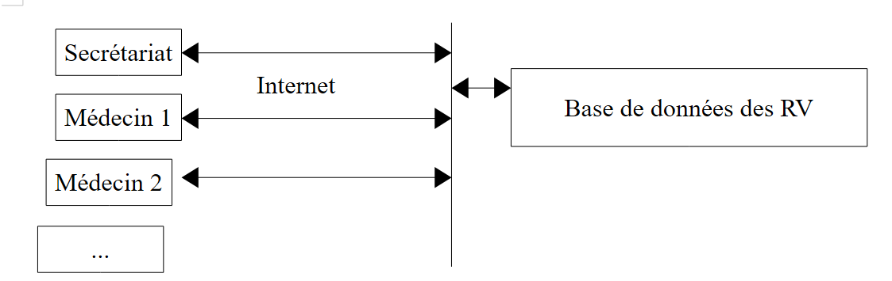 |
Ärzte arbeiten effizienter, wenn sie sich nicht mehr um die Terminverwaltung kümmern müssen. Bei einer ausreichenden Anzahl von Ärzten ist ihr Beitrag zu den Betriebskosten der Verwaltung minimal.
Das Unternehmen [ISTIA-AGI] hat beschlossen, die Anwendung in zwei Versionen zu entwickeln:
- eine JSF/EJB3/JPA-EclipseLink/Glassfish-Server-Version:
 |
- und eine JSF-/Spring-/JPA-Hibernate-/Tomcat-Serverversion:
 |
3.2. So funktioniert die Anwendung
Wir nennen die Anwendung [RdvMedecins]. Nachfolgend finden Sie Screenshots, die zeigen, wie sie funktioniert.
Die Startseite der Anwendung sieht wie folgt aus:
 |
Von dieser Startseite aus führt der Benutzer (Rezeptionist, Arzt) eine Reihe von Aktionen durch. Diese stellen wir im Folgenden vor. Die linke Ansicht zeigt die Seite, von der aus der Benutzer eine Anfrage stellt; die rechte Ansicht zeigt die vom Server gesendete Antwort.
 |
 |
 |
 |
 |
 |
Schließlich kann auch eine Fehlerseite angezeigt werden:
 |
3.3. Die Datenbank
Kehren wir zur Architektur der zu erstellenden Anwendung zurück:
 |
Die Datenbank, die wir [ dbrdvmedecins2] nennen werden, ist eine MySQL5-Datenbank mit vier Tabellen:
 |
3.3.1. Die Tabelle [MEDECINS]
Sie enthält Informationen zu den Ärzten, die von der Anwendung [RdvMedecins] verwaltet werden.
 |  |
- ID: die ID-Nummer des Arztes – der Primärschlüssel der Tabelle
- VERSION: Eine Zahl, die die Version der Zeile in der Tabelle angibt. Diese Zahl wird bei jeder Änderung an der Zeile um 1 erhöht.
- LAST_NAME: der Nachname des Arztes
- FIRST_NAME: der Vorname des Arztes
- TITLE: Anrede (Frau, Frau, Herr)
3.3.2. Die Tabelle [CLIENTS]
Die Patienten der verschiedenen Ärzte werden in der Tabelle [CLIENTS] gespeichert:
 |  |
- ID: die ID-Nummer des Kunden – der Primärschlüssel der Tabelle
- VERSION: Eine Zahl, die die Version der Zeile in der Tabelle angibt. Diese Zahl wird bei jeder Änderung an der Zeile um 1 erhöht.
- LAST NAME: der Nachname des Kunden
- VORNAME: der Vorname des Kunden
- TITLE: Anrede (Frau, Frau, Herr)
3.3.3. Die Tabelle [SLOTS]
Sie listet die Zeitfenster auf, in denen Termine verfügbar sind:
 |
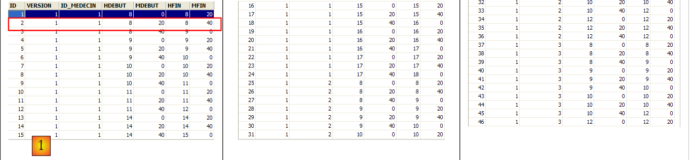 |
- ID: ID-Nummer für den Zeitblock – Primärschlüssel der Tabelle (Zeile 8)
- VERSION: Nummer, die die Version der Zeile in der Tabelle angibt. Diese Nummer wird bei jeder Änderung an der Zeile um 1 erhöht.
- DOCTOR_ID: ID-Nummer, die den Arzt identifiziert, zu dem dieses Zeitfenster gehört – Fremdschlüssel auf die Spalte DOCTORS(ID).
- START_TIME: Startzeit des Zeitfensters
- MSTART: Startminute des Zeitfensters
- HFIN: Endzeit des Zeitfensters
- MFIN: Endminuten des Zeitfensters
Die zweite Zeile der Tabelle [SLOTS] (siehe [1] oben) gibt beispielsweise an, dass Zeitfenster Nr. 2 um 8:20 Uhr beginnt und um 8:40 Uhr endet und der Ärztin Nr. 1 (Frau Marie PELISSIER) zugeordnet ist.
3.3.4. Die Tabelle [RV]
Sie listet die für jeden Arzt vereinbarten Termine auf:
 |
- ID: eindeutige Kennung für den Termin – Primärschlüssel
- DAY: Tag des Termins
- SLOT_ID: Terminzeitfenster – Fremdschlüssel auf das Feld [ID] der Tabelle [SLOTS] – bestimmt sowohl das Zeitfenster als auch den beteiligten Arzt.
- CLIENT_ID: ID des Kunden, für den die Reservierung vorgenommen wurde – Fremdschlüssel auf dem Feld [ID] der Tabelle [CLIENTS]
Diese Tabelle unterliegt einer Eindeutigkeitsbeschränkung für die Werte der verknüpften Spalten (DAY, SLOT_ID):
Wenn eine Zeile in der Tabelle [RV] in den Spalten (DAY, SLOT_ID) den Wert (DAY1, SLOT_ID1) enthält, darf dieser Wert an keiner anderen Stelle vorkommen. Andernfalls würde dies bedeuten, dass zwei Termine zur gleichen Zeit für denselben Arzt gebucht wurden. Aus Sicht der Java-Programmierung löst der JDBC-Treiber der Datenbank in diesem Fall eine SQLException aus.
Die Zeile mit der ID 3 (siehe [1] oben) bedeutet, dass am 23.08.2006 ein Termin für Slot Nr. 20 und Kunde Nr. 4 gebucht wurde. Die Tabelle [SLOTS] gibt an, dass Slot Nr. 20 dem Zeitfenster 16:20 – 16:40 Uhr entspricht und zur Ärztin Nr. 1 (Frau Marie PELISSIER) gehört. Die Tabelle [CLIENTS] gibt an, dass Patient Nr. 4 Frau Brigitte BISTROU ist.
3.3.5. Erstellen der Datenbank
Um die Tabellen zu erstellen und zu füllen, können Sie das Skript [dbrdvmedecins2.sql] verwenden, das Sie auf der Beispiel-Website finden. Gehen Sie unter Verwendung von [WampServer] (siehe Abschnitt 1.3.3) wie folgt vor:
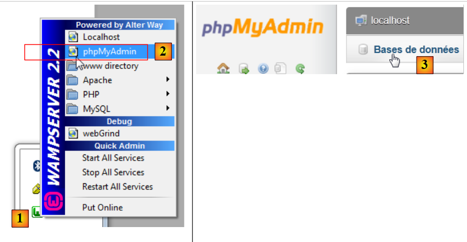 |
- Klicken Sie in [1] auf das [WampServer]-Symbol und wählen Sie die Option [PhpMyAdmin] [2],
- wählen Sie in [3] im sich öffnenden Fenster den Link [Datenbanken] aus,
 |
- Erstellen Sie in [2] eine Datenbank mit dem Namen [4] und der Kodierung [5],
- in [7] wurde die Datenbank erstellt. Klicken Sie auf den entsprechenden Link,
 |
- in [8] importieren Sie eine SQL-Datei,
- die Sie über die Schaltfläche [9] aus dem Dateisystem auswählen,
 |
- Wählen Sie in [11] das SQL-Skript aus und führen Sie es in [12] aus.
- in [13] wurden die vier Tabellen in der Datenbank erstellt. Folgen Sie einem der Links,
 |
- in [14] den Inhalt der Tabelle.
Wir werden nicht mehr auf diese Datenbank zurückkommen. Der Leser ist jedoch eingeladen, ihre Entwicklung im Laufe der Programme zu verfolgen, insbesondere wenn etwas nicht funktioniert.
3.4. Die [DAO]- und [JPA]-Schichten
Kehren wir zu der Architektur zurück, die wir aufbauen müssen:
 |
Wir werden vier Maven-Projekte erstellen:
- ein Projekt für die [DAO]- und [JPA]-Schichten,
- ein Projekt für die [Business]-Schicht,
- ein Projekt für die [Web]-Schicht,
- ein Unternehmensprojekt, das die drei vorgenannten Projekte zusammenführt.
Wir werden nun das Maven-Projekt für die [DAO]- und [JPA]-Schichten erstellen.
Hinweis: Um die [Business]-, [DAO]- und [JPA]-Schichten zu verstehen, sind Kenntnisse in Java EE erforderlich. Hierzu können Sie [ref7] (siehe Absatz 3) heranziehen.
3.4.1. Das NetBeans-Projekt
So gehen Sie vor:
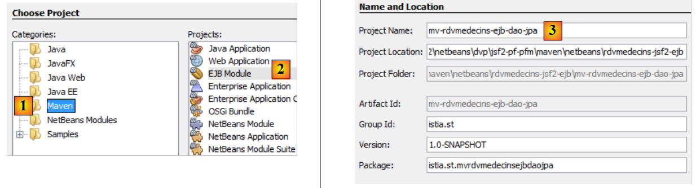 |
- In [1] erstellen wir ein Maven-Projekt vom Typ [EJB-Modul] [2],
- in [3] benennen wir das Projekt,
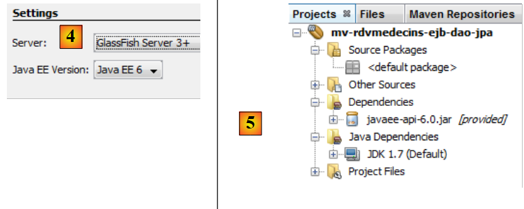 |
- in [4] wählen wir den GlassFish-Server aus,
- in [5] das generierte Projekt.
3.4.2. Generieren der [JPA]-Schicht
Kehren wir zu der Architektur zurück, die wir erstellen müssen:
 |
Mit NetBeans lassen sich die [JPA]-Schicht und die [EJB]-Schicht, die den Zugriff auf die generierten JPA-Entitäten steuert, automatisch generieren. Es ist hilfreich, mit diesen Methoden zur automatischen Generierung vertraut zu sein, da der generierte Code wertvolle Einblicke in die Erstellung von JPA-Entitäten oder des EJB-Codes, der diese nutzt, bietet.
Wir werden nun einige dieser automatischen Generierungswerkzeuge beschreiben. Um den generierten Code zu verstehen, benötigen Sie fundierte Kenntnisse über JPA-Entitäten [ref8] und EJBs [ref7] (siehe Abschnitt 3).
3.4.2.1. Erstellen einer NetBeans-Verbindung zur Datenbank
- Starten Sie das DBMS MySQL 5, damit die Datenbank verfügbar ist,
- und erstellen Sie eine NetBeans-Verbindung zur Datenbank [dbrdvmedecins2],
 |
- wählen Sie auf der Registerkarte [Services] [1] im Abschnitt [Databases] [2] den MySQL-JDBC-Treiber [3] aus,
- wählen Sie dann die Option [4] „Verbinden über“, um eine Verbindung zu einer MySQL-Datenbank herzustellen,
- geben Sie in [5] die erforderlichen Informationen ein. In [6] den Datenbanknamen, in [7] den Datenbankbenutzer und das Passwort;
- in [8] können Sie die eingegebenen Informationen testen,
- in [9] die erwartete Meldung, wenn die Angaben korrekt sind,
 |
- in [10] wird die Verbindung hergestellt. Sie können die vier Tabellen in der verbundenen Datenbank einsehen.
3.4.2.2. Erstellen einer Persistenz-Einheit
Kehren wir zu der Architektur zurück, die wir gerade aufbauen:
 |
Wir entwickeln derzeit die [JPA]-Schicht. Ihre Konfiguration erfolgt in einer [persistence.xml]-Datei, in der Persistenz-Einheiten definiert werden. Jede davon benötigt die folgenden Informationen:
- die JDBC-Verbindungsdaten für die Datenbank (URL, Benutzername, Passwort),
- die Klassen, die die Datenbanktabellen repräsentieren,
- die verwendete JPA-Implementierung. Tatsächlich ist JPA eine Spezifikation, die von verschiedenen Produkten implementiert wird. Hier verwenden wir EclipseLink, die Standardimplementierung des GlassFish-Servers. Dadurch müssen wir keine Bibliotheken einer anderen Implementierung zu GlassFish hinzufügen.
NetBeans kann diese Persistenzdatei mithilfe eines Assistenten generieren.
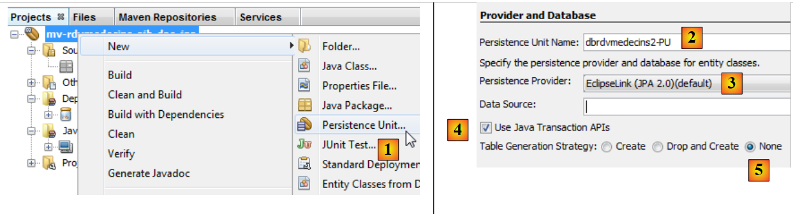 |
- Klicken Sie mit der rechten Maustaste auf das Projekt und wählen Sie „Create Persistence Unit“ [1],
- geben Sie in [2] der Persistenz-Unit, die Sie erstellen, einen Namen,
- wählen Sie in [3] die EclipseLink-JPA-Implementierung (JPA 2.0) aus,
- geben Sie in [4] an, dass Datenbanktransaktionen vom EJB-Container des GlassFish-Servers verwaltet werden,
- geben Sie unter [5] an, dass die Datenbanktabellen bereits erstellt wurden und daher nicht neu erstellt werden,
 |
- in [6] erstellen Sie eine neue Datenquelle für den GlassFish-Server,
- Geben Sie in [7] einen JNDI-Namen (Java Naming Directory Interface) an,
- in [8] verknüpfen Sie diesen Namen mit der im vorherigen Schritt erstellten MySQL-Verbindung,
 |
- in [9] schließen Sie den Assistenten ab,
- in [10] das neue Projekt,
- in [11] wurde die Datei [persistence.xml] im Ordner [META-INF] generiert,
- in [12] wurde ein Ordner [setup] erstellt,
- in [13] wurden dem Maven-Projekt neue Abhängigkeiten hinzugefügt.
Die generierte Datei [META-INF/persistence.xml] sieht wie folgt aus:
<?xml version="1.0" encoding="UTF-8"?>
<persistence version="2.0" xmlns="http://java.sun.com/xml/ns/persistence" xmlns:xsi="http://www.w3.org/2001/XMLSchema-instance" xsi:schemaLocation="http://java.sun.com/xml/ns/persistence http://java.sun.com/xml/ns/persistence/persistence_2_0.xsd">
<persistence-unit name="dbrdvmedecins2-PU" transaction-type="JTA">
<jta-data-source>jdbc/dbrdvmedecins2</jta-data-source>
<exclude-unlisted-classes>false</exclude-unlisted-classes>
<properties/>
</persistence-unit>
</persistence>
Es enthält die im Assistenten angegebenen Informationen:
- Zeile 3: den Namen der Persistence-Unit,
- Zeile 3: den Typ der Datenbanktransaktionen, in diesem Fall JTA-Transaktionen (Java Transaction API), die vom EJB3-Container des GlassFish-Servers verwaltet werden,
- Zeile 4: der JNDI-Name der Datenquelle.
Normalerweise gibt diese Datei den Typ der verwendeten JPA-Implementierung an. Im Assistenten haben wir EclipseLink ausgewählt. Da dies die vom GlassFish-Server standardmäßig verwendete JPA-Implementierung ist, wird sie in der Datei [persistence.xml] nicht erwähnt.
Auf der Registerkarte [Design] sehen Sie eine Übersicht über die Datei [persistence.xml]:
 |
Um EclipseLink-Protokolle zu erhalten, verwenden wir die folgende [persistence.xml]-Datei:
<?xml version="1.0" encoding="UTF-8"?>
<persistence version="2.0" xmlns="http://java.sun.com/xml/ns/persistence" xmlns:xsi="http://www.w3.org/2001/XMLSchema-instance" xsi:schemaLocation="http://java.sun.com/xml/ns/persistence http://java.sun.com/xml/ns/persistence/persistence_2_0.xsd">
<persistence-unit name="dbrdvmedecins2-PU" transaction-type="JTA">
<provider>org.eclipse.persistence.jpa.PersistenceProvider</provider>
<jta-data-source>jdbc/dbrdvmedecins2</jta-data-source>
<exclude-unlisted-classes>false</exclude-unlisted-classes>
<properties>
<property name="eclipselink.logging.level" value="FINE"/>
</properties>
</persistence-unit>
</persistence>
- Zeile 4: gibt an, dass die EclipseLink-JPA-Implementierung verwendet wird,
- Zeilen 7–9: enthalten die Konfigurationseigenschaften für den JPA-Anbieter, in diesem Fall EclipseLink,
- Zeile 8: Diese Eigenschaft aktiviert die Protokollierung der SQL-Anweisungen, die EclipseLink ausführen wird.
Die erstellte Datei [glassfish-resources.xml] sieht wie folgt aus:
<?xml version="1.0" encoding="UTF-8"?>
<!DOCTYPE resources PUBLIC "-//GlassFish.org//DTD GlassFish Application Server 3.1 Resource Definitions//EN" "http://glassfish.org/dtds/glassfish-resources_1_5.dtd">
<resources>
<jdbc-connection-pool allow-non-component-callers="false" ... steady-pool-size="8" validate-atmost-once-period-in-seconds="0" wrap-jdbc-objects="false">
<property name="serverName" value="localhost"/>
<property name="portNumber" value="3306"/>
<property name="databaseName" value="dbrdvmedecins2"/>
<property name="User" value="root"/>
<property name="Password" value=""/>
<property name="URL" value="jdbc:mysql://localhost:3306/dbrdvmedecins2"/>
<property name="driverClass" value="com.mysql.jdbc.Driver"/>
</jdbc-connection-pool>
<jdbc-resource enabled="true" jndi-name="jdbc/dbrdvmedecins2" object-type="user" pool-name="mysql_dbrdvmedecins2_rootPool"/>
</resources>
Diese Datei enthält die Informationen, die wir in den beiden zuvor verwendeten Assistenten eingegeben haben:
- Zeilen 5–11: die JDBC-Eigenschaften der MySQL5-Datenbank [dbrdvmedecins2],
- Zeile 13: der JNDI-Name der Datenquelle.
Diese Datei wird verwendet, um die JNDI-Datenquelle [jdbc/dbrdvmedecins2] für den GlassFish-Server anzulegen. Dies gilt speziell für diesen Server. Für einen anderen Server wäre ein anderer Ansatz erforderlich, in der Regel unter Verwendung eines Verwaltungstools. Ein solches Tool ist auch für GlassFish verfügbar.
Schließlich wurden dem Projekt Abhängigkeiten hinzugefügt. Die Datei [pom.xml] sieht wie folgt aus:
<project xmlns="http://maven.apache.org/POM/4.0.0" xmlns:xsi="http://www.w3.org/2001/XMLSchema-instance"
xsi:schemaLocation="http://maven.apache.org/POM/4.0.0 http://maven.apache.org/xsd/maven-4.0.0.xsd">
<modelVersion>4.0.0</modelVersion>
<groupId>istia.st</groupId>
<artifactId>mv-rdvmedecins-ejb-dao-jpa</artifactId>
<version>1.0-SNAPSHOT</version>
<packaging>ejb</packaging>
<name>mv-rdvmedecins-ejb-dao-jpa</name>
...
<dependencies>
<dependency>
<groupId>org.eclipse.persistence</groupId>
<artifactId>eclipselink</artifactId>
<version>2.3.0</version>
<scope>provided</scope>
</dependency>
<dependency>
<groupId>org.eclipse.persistence</groupId>
<artifactId>javax.persistence</artifactId>
<version>2.0.3</version>
<scope>provided</scope>
</dependency>
<dependency>
<groupId>org.eclipse.persistence</groupId>
<artifactId>org.eclipse.persistence.jpa.modelgen.processor</artifactId>
<version>2.3.0</version>
<scope>provided</scope>
</dependency>
<dependency>
<groupId>javax</groupId>
<artifactId>javaee-api</artifactId>
<version>6.0</version>
<scope>provided</scope>
</dependency>
</dependencies>
...
<repositories>
<repository>
<url>http://download.eclipse.org/rt/eclipselink/maven.repo/</url>
<id>eclipselink</id>
<layout>default</layout>
<name>Repository for library Library[eclipselink]</name>
</repository>
</repositories>
</project>
- Zeilen 32–37: Eine [JPA]-Schicht benötigt das [javaee-api]-Artefakt;
- Zeilen 16, 22, 28: die von der hier verwendeten JPA/EclipseLink-Implementierung benötigten Artefakte.
- Zeilen 18, 24, 30, 36: Alle Artefakte haben das Attribut „provided“. Beachten Sie, dass dies bedeutet, dass sie für die Kompilierung, nicht jedoch für die Laufzeit erforderlich sind. Tatsächlich werden sie zur Laufzeit vom GlassFish-Server bereitgestellt.
- Zeilen 41–48: Definieren Sie ein neues Maven-Artefakt-Repository, in dem die EclipseLink-Artefakte zu finden sind.
3.4.2.3. Generieren von JPA-Entitäten
JPA-Entitäten können mit einem NetBeans-Assistenten generiert werden:
 |
- Erstellen Sie in [1] JPA-Entitäten aus einer Datenbank,
- wählen Sie in [2] die zuvor erstellte Datenquelle [jdbc / dbrdvmedecins2] aus,
- in [3] die Liste der Tabellen für diese Datenquelle,
- in [4] wählen Sie alle aus,
 |
- in [5] die ausgewählten Tabellen,
- in [6] benennen wir die Java-Klassen, die den vier Tabellen zugeordnet sind,
- sowie einen Paketnamen [7],
- In [8] gruppiert JPA Datenbanktabellenzeilen in Sammlungen. Wir wählen eine Liste als Sammlung,
 |
- in [9] die vom Assistenten erstellten Java-Klassen.
3.4.2.4. Die generierten JPA-Entitäten
Die Entität [Medecin] repräsentiert die Tabelle [medecins]. Die Java-Klasse ist mit Annotationen übersät, die den Code auf den ersten Blick schwer lesbar machen. Behalten wir nur das bei, was für das Verständnis der Rolle der Entität wesentlich ist, erhalten wir den folgenden Code:
package rdvmedecins.jpa;
...
@Entity
@Table(name = "medecins")
public class Medecin implements Serializable {
@Id
@GeneratedValue(strategy = GenerationType.IDENTITY)
@Column(name = "ID")
private Long id;
@Column(name = "TITRE")
private String titre;
@Column(name = "NOM")
private String nom;
@Column(name = "VERSION")
private int version;
@Column(name = "PRENOM")
private String prenom;
@OneToMany(cascade = CascadeType.ALL, mappedBy = "idMedecin")
private List<Creneau> creneauList;
// manufacturers
....
// getters and setters
....
@Override
public int hashCode() {
...
}
@Override
public boolean equals(Object object) {
...
}
@Override
public String toString() {
...
}
}
- Zeile 4: Die Annotation @Entity macht die Klasse [Medecin] zu einer JPA-Entität, d. h. zu einer Klasse, die über die JPA-API mit einer Datenbanktabelle verknüpft ist.
- Zeile 5: Der Name der Datenbanktabelle, die der JPA-Entität zugeordnet ist. Jedes Feld in der Tabelle entspricht einem Feld in der Java-Klasse,
- Zeile 6: Die Klasse implementiert die Schnittstelle Serializable. Dies ist in Client-Server-Anwendungen erforderlich, in denen Entitäten zwischen Client und Server serialisiert werden.
- Zeilen 10–11: Das Feld „id“ der Klasse [Medecin] entspricht dem Feld [ID] (Zeile 10) der Tabelle [medecins],
- Zeilen 13–14: Das Feld *title* in der Klasse [Doctor] entspricht dem Feld [TITLE] (Zeile 13) in der Tabelle [doctors],
- Zeilen 16–17: Das Feld „name“ der Klasse [Doctor] entspricht dem Feld [NAME] (Zeile 16) der Tabelle [doctors],
- Zeilen 19–20: Das Feld „version“ der Klasse [Medecin] entspricht dem Feld [VERSION] (Zeile 19) der Tabelle [medecins]. Hier erkennt der Assistent nicht, dass es sich bei der Spalte tatsächlich um eine Versionsspalte handelt, die jedes Mal inkrementiert werden muss, wenn die Zeile, zu der sie gehört, geändert wird. Um ihr diese Rolle zuzuweisen, müssen Sie die Annotation @Version hinzufügen. Dies werden wir in einem späteren Schritt tun,
- Zeilen 22–23: Das Feld „first_name“ der Klasse [Doctor] entspricht dem Feld [FIRST_NAME] der Tabelle [doctors],
- Zeilen 10–11: Das Feld id entspricht dem Primärschlüssel [ID] der Tabelle. Die Annotationen in den Zeilen 8–9 verdeutlichen diesen Punkt,
- Zeile 8: Die Annotation @Id gibt an, dass das annotierte Feld mit dem Primärschlüssel der Tabelle verknüpft ist,
- Zeile 9: Die [JPA]-Schicht generiert den Primärschlüssel für die Zeilen, die sie in die Tabelle [Doctors] einfügt. Es gibt mehrere mögliche Strategien. Hier gibt die Strategie „GenerationType.IDENTITY“ an, dass die JPA-Schicht den „auto_increment“-Modus der MySQL-Tabelle verwendet,
- Zeilen 25–26: Die Tabelle [slots] verfügt über einen Fremdschlüssel zur Tabelle [doctors]. Ein Termin gehört zu einem Arzt. Umgekehrt sind einem Arzt mehrere Termine zugeordnet. Wir haben daher eine Eins-zu-Viele-Beziehung (ein Arzt zu vielen Slots), eine Beziehung, die durch die Annotation @OneToMany in JPA (Zeile 25) qualifiziert wird. Das Feld in Zeile 26 enthält alle Slots des Arztes. Dies wird ohne jegliche Programmierung erreicht. Um Zeile 25 vollständig zu verstehen, müssen wir die Klasse [Creneau] einführen.
Sie sieht wie folgt aus:
package rdvmedecins.jpa;
import java.io.Serializable;
import java.util.List;
import javax.persistence.*;
import javax.validation.constraints.NotNull;
@Entity
@Table(name = "creneaux")
public class Creneau implements Serializable {
@Id
@GeneratedValue(strategy = GenerationType.IDENTITY)
@Column(name = "ID")
private Long id;
@Column(name = "MDEBUT")
private int mdebut;
@Column(name = "HFIN")
private int hfin;
@Column(name = "HDEBUT")
private int hdebut;
@Column(name = "MFIN")
private int mfin;
@Column(name = "VERSION")
private int version;
@JoinColumn(name = "ID_MEDECIN", referencedColumnName = "ID")
@ManyToOne(optional = false)
private Medecin idMedecin;
@OneToMany(cascade = CascadeType.ALL, mappedBy = "idCreneau")
private List<Rv> rvList;
// manufacturers
...
// getters and setters
...
@Override
public int hashCode() {
...
}
@Override
public boolean equals(Object object) {
...
}
@Override
public String toString() {
...
}
}
Wir kommentieren nur die neuen Anmerkungen:
- Wir haben festgelegt, dass die Tabelle [slots] einen Fremdschlüssel zur Tabelle [doctors] hat: Ein Slot ist einem Arzt zugeordnet. Einem Arzt können mehrere Slots zugeordnet sein. Wir haben eine Beziehung von der Tabelle [slots] zur Tabelle [doctors], die als „Viele-zu-Eins“ (Slots zu Arzt) definiert ist. Die Annotation @ManyToOne in Zeile 32 dient zur Definition des Fremdschlüssels,
- Zeile 31 mit der Annotation @JoinColumn legt die Fremdschlüsselbeziehung fest: Die Spalte [ID_MEDECIN] in der Tabelle [slots] ist ein Fremdschlüssel auf die Spalte [ID] in der Tabelle [doctors],
- Zeile 33: ein Verweis auf den Arzt, dem der Terminplatz gehört. Auch dies wird hier ohne jegliche Programmierung erreicht.
Die Fremdschlüsselbeziehung zwischen der Entität [Creneau] und der Entität [Medecin] wird somit durch zwei Annotationen implementiert:
- in der Entität [Creneau]:
@JoinColumn(name = "ID_MEDECIN", referencedColumnName = "ID")
@ManyToOne(optional = false)
private Medecin idMedecin;
- in der Entität [Doctor]:
@OneToMany(cascade = CascadeType.ALL, mappedBy = "idMedecin")
private List<Creneau> creneauList;
Beide Annotationen spiegeln dieselbe Beziehung wider: die des Fremdschlüssels von der Tabelle [Appointments] zur Tabelle [Doctors]. Man sagt, sie seien zueinander invers. Nur die @ManyToOne-Beziehung ist wesentlich. Sie definiert die Fremdschlüsselbeziehung eindeutig. Die @OneToMany-Beziehung ist optional. Falls vorhanden, verweist sie lediglich auf die @ManyToOne-Beziehung, mit der sie assoziiert ist. Dies ist die Bedeutung des Attributs mappedBy in Zeile 1 der Entität [Doctor]. Der Wert dieses Attributs ist der Name des Feldes in der Entität [Slot], das die Annotation @ManyToOne enthält, welche den Fremdschlüssel angibt. Ebenfalls in Zeile 1 der Entität [Medecin] definiert das Attribut cascade=CascadeType.ALL das Verhalten der Entität [Medecin] in Bezug auf die Entität [Creneau]:
- Wenn eine neue [Doctor]-Entität in die Datenbank eingefügt wird, müssen auch die [TimeSlot]-Entitäten im Feld in Zeile 2 eingefügt werden.
- wenn eine [Doctor]-Entität in der Datenbank geändert wird, müssen auch die [Slot]-Entitäten im Feld in Zeile 2 geändert werden,
- wenn eine [Doctor]-Entität aus der Datenbank gelöscht wird, müssen auch die [Slot]-Entitäten im Feld in Zeile 2 gelöscht werden.
Wir stellen den Code für die beiden anderen Entitäten ohne spezifische Kommentare zur Verfügung, da sie keine neue Notation einführen.
Die Entität [Client]
package rdvmedecins.jpa;
...
@Entity
@Table(name = "clients")
public class Client implements Serializable {
@Id
@GeneratedValue(strategy = GenerationType.IDENTITY)
@Column(name = "ID")
private Long id;
@Column(name = "TITRE")
private String titre;
@Column(name = "NOM")
private String nom;
@Column(name = "VERSION")
private int version;
@Column(name = "PRENOM")
private String prenom;
@OneToMany(cascade = CascadeType.ALL, mappedBy = "idClient")
private List<Rv> rvList;
// manufacturers
...
// getters and setters
...
@Override
public int hashCode() {
...
}
@Override
public boolean equals(Object object) {
...
}
@Override
public String toString() {
...
}
}
- Die Zeilen 24–25 spiegeln die Fremdschlüsselbeziehung zwischen der Tabelle [rv] und der Tabelle [clients] wider.
Die Entität [Rv]:
package rdvmedecins.jpa;
...
@Entity
@Table(name = "rv")
public class Rv implements Serializable {
@Id
@GeneratedValue(strategy = GenerationType.IDENTITY)
@Column(name = "ID")
private Long id;
@Column(name = "JOUR")
@Temporal(TemporalType.DATE)
private Date jour;
@JoinColumn(name = "ID_CRENEAU", referencedColumnName = "ID")
@ManyToOne(optional = false)
private Creneau idCreneau;
@JoinColumn(name = "ID_CLIENT", referencedColumnName = "ID")
@ManyToOne(optional = false)
private Client idClient;
// manufacturers
...
// getters and setters
...
@Override
public int hashCode() {
...
}
@Override
public boolean equals(Object object) {
...
}
@Override
public String toString() {
...
}
}
- Zeile 13 gibt an, dass das Feld `jour` vom Typ Java Date ist. Dies bedeutet, dass in der Tabelle [rv] die Spalte [JOUR] (Zeile 12) vom Typ Datum (ohne Uhrzeit) ist,
- Zeilen 16–18: definieren die Fremdschlüsselbeziehung von der Tabelle [rv] zur Tabelle [slots],
- Zeilen 20–22: definieren die Fremdschlüsselbeziehung von der Tabelle [rv] zur Tabelle [clients].
Die automatische Generierung von JPA-Entitäten bietet uns eine funktionierende Grundlage. Manchmal reicht dies aus, manchmal jedoch nicht. Dies ist hier der Fall:
- Wir müssen die Annotation @Version zu den verschiedenen Versionsfeldern der Entitäten hinzufügen,
- wir müssen toString-Methoden schreiben, die expliziter sind als die generierten,
- die Entitäten [Medecin] und [Client] sind analog. Wir lassen sie von einer Klasse [Person] ableiten,
- Wir werden die inversen @OneToMany-Beziehungen aus den @ManyToOne-Beziehungen entfernen. Sie sind nicht unbedingt erforderlich und führen zu Komplikationen bei der Programmierung,
- Wir entfernen die @NotNull-Validierung für die Primärschlüssel. Beim Persistieren einer JPA-Entität in MySQL hat die Entität zunächst einen Null-Primärschlüssel. Erst nach der Persistenz in der Datenbank erhält der Primärschlüssel der persistierten Entität einen Wert.
Mit diesen Spezifikationen sehen die verschiedenen Klassen wie folgt aus:
Die Klasse „Person“ wird verwendet, um Ärzte und Kunden darzustellen:
package rdvmedecins.jpa;
import java.io.Serializable;
import javax.persistence.*;
import javax.validation.constraints.NotNull;
import javax.validation.constraints.Size;
@MappedSuperclass
public class Personne implements Serializable {
private static final long serialVersionUID = 1L;
@Id
@GeneratedValue(strategy = GenerationType.IDENTITY)
@Column(name = "ID")
private Long id;
@Basic(optional = false)
@Size(min = 1, max = 5)
@Column(name = "TITRE")
private String titre;
@Basic(optional = false)
@NotNull
@Size(min = 1, max = 30)
@Column(name = "NOM")
private String nom;
@Basic(optional = false)
@NotNull
@Column(name = "VERSION")
@Version
private int version;
@Basic(optional = false)
@NotNull
@Size(min = 1, max = 30)
@Column(name = "PRENOM")
private String prenom;
// manufacturers
...
// getters and setters
...
@Override
public String toString() {
return String.format("[%s,%s,%s,%s,%s]", id, version, titre, prenom, nom);
}
}
- Zeile 8: Beachten Sie, dass die Klasse [Person] selbst keine Entität (@Entity) ist. Sie dient als übergeordnete Klasse für Entitäten. Dies wird durch die Annotation @MappedSuperClass angegeben.
Die Entität [Client] kapselt die Zeilen der Tabelle [clients]. Sie leitet sich von der vorangehenden Klasse [Person] ab:
package rdvmedecins.jpa;
import java.io.Serializable;
import javax.persistence.*;
@Entity
@Table(name = "clients")
public class Client extends Personne implements Serializable {
private static final long serialVersionUID = 1L;
// manufacturers
...
@Override
public int hashCode() {
...
}
@Override
public boolean equals(Object object) {
...
}
@Override
public String toString() {
return String.format("Client[%s,%s,%s,%s]", getId(), getTitre(), getPrenom(), getNom());
}
}
- Zeile 6: Die Klasse [Client] ist eine JPA-Entität,
- Zeile 7: Sie ist mit der Tabelle [clients] verknüpft,
- Zeile 8: Sie leitet sich von der Klasse [Person] ab.
Die Entität [Doctor], die die Zeilen der Tabelle [doctors] kapselt, folgt dem gleichen Muster:
package rdvmedecins.jpa;
import java.io.Serializable;
import javax.persistence.*;
@Entity
@Table(name = "medecins")
public class Medecin extends Personne implements Serializable {
private static final long serialVersionUID = 1L;
// manufacturers
...
@Override
public int hashCode() {
...
}
@Override
public boolean equals(Object object) {
...
}
@Override
public String toString() {
return String.format("Médecin[%s,%s,%s,%s]", getId(), getTitre(), getPrenom(), getNom());
}
}
Die Entität [Creneau] kapselt die Zeilen der Tabelle [creneaux]:
package rdvmedecins.jpa;
import java.io.Serializable;
import java.util.List;
import javax.persistence.*;
import javax.validation.constraints.NotNull;
@Entity
@Table(name = "creneaux")
public class Creneau implements Serializable {
private static final long serialVersionUID = 1L;
@Id
@GeneratedValue(strategy = GenerationType.IDENTITY)
@Basic(optional = false)
@Column(name = "ID")
private Long id;
@Basic(optional = false)
@NotNull
@Column(name = "MDEBUT")
private int mdebut;
@Basic(optional = false)
@NotNull
@Column(name = "HFIN")
private int hfin;
@Basic(optional = false)
@NotNull
@Column(name = "HDEBUT")
private int hdebut;
@Basic(optional = false)
@NotNull
@Column(name = "MFIN")
private int mfin;
@Basic(optional = false)
@NotNull
@Column(name = "VERSION")
@Version
private int version;
@JoinColumn(name = "ID_MEDECIN", referencedColumnName = "ID")
@ManyToOne(optional = false)
private Medecin medecin;
// manufacturers
...
// getters and setters
...
@Override
public int hashCode() {
...
}
@Override
public boolean equals(Object object) {
// TODO: Warning - this method won't work in the case the id fields are not set
...
}
@Override
public String toString() {
return String.format("Creneau [%s, %s, %s:%s, %s:%s,%s]", id, version, hdebut, mdebut, hfin, mfin, medecin);
}
}
- Die Zeilen 45–47 modellieren die „Viele-zu-Eins“-Beziehung zwischen der Tabelle [slots] und der Tabelle [doctors] in der Datenbank: Ein Arzt hat mehrere Termine, und ein Termin gehört zu einem einzigen Arzt.
Die Entität [Rv] kapselt die Zeilen der Tabelle [rv]:
package rdvmedecins.jpa;
import java.io.Serializable;
import java.util.Date;
import javax.persistence.*;
import javax.validation.constraints.NotNull;
@Entity
@Table(name = "rv")
public class Rv implements Serializable {
private static final long serialVersionUID = 1L;
@Id
@GeneratedValue(strategy = GenerationType.IDENTITY)
@Basic(optional = false)
@Column(name = "ID")
private Long id;
@Basic(optional = false)
@NotNull
@Column(name = "JOUR")
@Temporal(TemporalType.DATE)
private Date jour;
@JoinColumn(name = "ID_CRENEAU", referencedColumnName = "ID")
@ManyToOne(optional = false)
private Creneau creneau;
@JoinColumn(name = "ID_CLIENT", referencedColumnName = "ID")
@ManyToOne(optional = false)
private Client client;
// manufacturers
...
// getters and setters
...
@Override
public int hashCode() {
...
}
@Override
public boolean equals(Object object) {
...
}
@Override
public String toString() {
return String.format("Rv[%s, %s, %s]", id, creneau, client);
}
}
- Die Zeilen 29–31 modellieren die „Viele-zu-Eins“-Beziehung zwischen der Tabelle [rv] und der Tabelle [clients] (ein Kunde kann in mehreren Rv-Einträgen vorkommen) in der Datenbank, und die Zeilen 25–27 modellieren die „Viele-zu-Eins“-Beziehung zwischen der Tabelle [rv] und der Tabelle [slots] (ein Slot kann in mehreren Rv vorkommen).
3.4.3. Die Ausnahmeklasse
 |
Die Ausnahmeklasse der Anwendung [ RdvMedecinsException] lautet wie folgt:
package rdvmedecins.exceptions;
import java.io.Serializable;
import javax.ejb.ApplicationException;
@ApplicationException(rollback=true)
public class RdvMedecinsException extends RuntimeException implements Serializable{
// private fields
private int code = 0;
// manufacturers
public RdvMedecinsException() {
super();
}
public RdvMedecinsException(String message) {
super(message);
}
public RdvMedecinsException(String message, Throwable cause) {
super(message, cause);
}
public RdvMedecinsException(Throwable cause) {
super(cause);
}
public RdvMedecinsException(String message, int code) {
super(message);
setCode(code);
}
public RdvMedecinsException(Throwable cause, int code) {
super(cause);
setCode(code);
}
public RdvMedecinsException(String message, Throwable cause, int code) {
super(message, cause);
setCode(code);
}
// getters - setters
public int getCode() {
return code;
}
public void setCode(int code) {
this.code = code;
}
}
- Zeile 7: Die Klasse erweitert die Klasse [RuntimeException]. Daher verlangt der Compiler nicht, dass sie mit try/catch-Blöcken abgefangen wird.
- Zeile 6: Die Annotation @ApplicationException stellt sicher, dass die Ausnahme nicht von einer [EjbException] „verschluckt“ wird.
Um die Annotation @ApplicationException zu verstehen, wollen wir uns noch einmal die serverseitige Architektur ansehen:
 |
Die Ausnahme [RdvMedecinsException] wird von den EJB-Methoden in der [DAO]-Schicht innerhalb des EJB3-Containers ausgelöst und von diesem abgefangen. Ohne die Annotation @ApplicationException kapselt der EJB3-Container die aufgetretene Ausnahme in einer [EjbException] und löst sie erneut aus. Möglicherweise möchten Sie diese Kapselung nicht und ziehen es vor, eine Ausnahme vom Typ [RdvMedecinsException] aus dem EJB3-Container entweichen zu lassen. Genau das ermöglicht die Annotation @ApplicationException. Darüber hinaus weist das Attribut (rollback=true) dieser Annotation den EJB3-Container an, dass die Transaktion zurückgesetzt werden muss, wenn eine [RdvMedecinsException] innerhalb einer Methode auftritt, die als Teil einer Transaktion mit einem DBMS ausgeführt wird. In der Fachsprache wird dies als „Rollback der Transaktion“ bezeichnet.
3.4.4. Die EJB- en der [DAO]-Schicht
 |
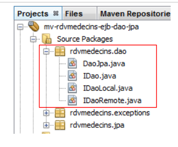 |
Die Java-Schnittstelle [ IDao] der [DAO]-Schicht sieht wie folgt aus:
package rdvmedecins.dao;
import java.util.Date;
import java.util.List;
import rdvmedecins.jpa.Client;
import rdvmedecins.jpa.Creneau;
import rdvmedecins.jpa.Medecin;
import rdvmedecins.jpa.Rv;
public interface IDao {
// customer list
public List<Client> getAllClients();
// list of doctors
public List<Medecin> getAllMedecins();
// list of physician slots
public List<Creneau> getAllCreneaux(Medecin medecin);
// list of doctor's appointments on a given day
public List<Rv> getRvMedecinJour(Medecin medecin, Date jour);
// find a customer identified by its id
public Client getClientById(Long id);
// find a customer identified by its id
public Medecin getMedecinById(Long id);
// find an Rv identified by its id
public Rv getRvById(Long id);
// find a time slot identified by its id
public Creneau getCreneauById(Long id);
// add a RV to the list
public Rv ajouterRv(Date jour, Creneau creneau, Client client);
// delete a RV
public void supprimerRv(Rv rv);
}
Diese Schnittstelle wurde nach der Ermittlung der Anforderungen der [Web]-Schicht erstellt:
- Zeile 14: die Liste der Kunden. Diese benötigen wir, um die Dropdown-Liste der Kunden zu füllen,
- Zeile 16: die Liste der Ärzte. Diese benötigen wir, um die Dropdown-Liste der Ärzte zu füllen,
- Zeile 18: die Liste der verfügbaren Zeitfenster eines Arztes. Diese benötigen wir, um den Terminplan des Arztes für einen bestimmten Tag anzuzeigen,
- Zeile 20: die Liste der Termine eines Arztes für einen bestimmten Tag. In Kombination mit der vorherigen Methode können wir so den Terminplan des Arztes für einen bestimmten Tag mit den bereits gebuchten Zeitfenstern anzeigen,
- Zeile 22: ermöglicht es uns, einen Kunden anhand seiner ID-Nummer zu finden. Mit dieser Methode können wir einen Kunden finden, indem wir ihn aus der Kunden-Dropdown-Liste auswählen,
- Zeile 24: wie oben für Ärzte,
- Zeile 26: Ruft einen Termin anhand seiner Nummer ab. Kann beim Löschen eines Termins verwendet werden, um vorher zu überprüfen, ob er tatsächlich existiert,
- Zeile 28: Ruft einen Zeitblock anhand seiner Nummer ab. Ermöglicht es Ihnen, den Zeitblock zu identifizieren, den ein Benutzer hinzufügen oder löschen möchte,
- Zeile 30: zum Hinzufügen eines Termins,
- Zeile 32: zum Löschen eines Termins.
Die lokale Schnittstelle des EJB [IDaoLocal] leitet sich einfach von der vorherigen Schnittstelle [IDao] ab:
package rdvmedecins.dao;
import javax.ejb.Local;
@Local
public interface IDaoLocal extends IDao{
}
Das Gleiche gilt für die Remote-Schnittstelle [IDaoRemote]:
package rdvmedecins.dao;
import javax.ejb.Remote;
@Remote
public interface IDaoRemote extends IDao{
}
Das EJB [DaoJpa] implementiert sowohl die lokale als auch die Remote-Schnittstelle:
package rdvmedecins.dao;
...
@Singleton (mappedName="rdvmedecins.dao")
@TransactionAttribute(TransactionAttributeType.REQUIRED)
public class DaoJpa implements IDaoLocal, IDaoRemote, Serializable {
- Zeile 5 gibt an, dass das Remote-EJB den Namen „rdvmedecins.dao“ trägt. Darüber hinaus stellt die Annotation @Singleton (Java EE6) sicher, dass nur eine einzige Instanz des EJBs erstellt wird. Die Annotation @Stateless (Java EE5) definiert ein EJB, das in mehreren Instanzen erstellt werden kann, um einen EJB-Pool zu füllen.
- Zeile 6 gibt an, dass alle EJB-Methoden innerhalb einer vom EJB3-Container verwalteten Transaktion ausgeführt werden,
- Zeile 7 zeigt, dass das EJB die lokalen und Remote-Schnittstellen implementiert und zudem serialisierbar ist.
Der vollständige EJB-Code lautet wie folgt:
package rdvmedecins.dao;
import java.io.Serializable;
import java.util.Date;
import java.util.List;
import javax.ejb.Singleton;
import javax.ejb.TransactionAttribute;
import javax.ejb.TransactionAttributeType;
import javax.persistence.EntityManager;
import javax.persistence.PersistenceContext;
import rdvmedecins.exceptions.RdvMedecinsException;
import rdvmedecins.jpa.Client;
import rdvmedecins.jpa.Creneau;
import rdvmedecins.jpa.Medecin;
import rdvmedecins.jpa.Rv;
@Singleton (mappedName="rdvmedecins.dao")
@TransactionAttribute(TransactionAttributeType.REQUIRED)
public class DaoJpa implements IDaoLocal, IDaoRemote, Serializable {
@PersistenceContext
private EntityManager em;
// customer list
public List<Client> getAllClients() {
try {
return em.createQuery("select rc from Client rc").getResultList();
} catch (Throwable th) {
throw new RdvMedecinsException(th, 1);
}
}
// list of doctors
public List<Medecin> getAllMedecins() {
try {
return em.createQuery("select rm from Medecin rm").getResultList();
} catch (Throwable th) {
throw new RdvMedecinsException(th, 2);
}
}
// list of time slots for a given doctor
// doctor: the doctor
public List<Creneau> getAllCreneaux(Medecin medecin) {
try {
return em.createQuery("select rc from Creneau rc join rc.medecin m where m.id=:idMedecin").setParameter("idMedecin", medecin.getId()).getResultList();
} catch (Throwable th) {
throw new RdvMedecinsException(th, 3);
}
}
// list of appointments for a given doctor on a given day
// doctor: the doctor
// day: the day
public List<Rv> getRvMedecinJour(Medecin medecin, Date jour) {
try {
return em.createQuery("select rv from Rv rv join rv.creneau c join c.idMedecin m where m.id=:idMedecin and rv.jour=:jour").setParameter("idMedecin", medecin.getId()).setParameter("jour", jour).getResultList();
} catch (Throwable th) {
throw new RdvMedecinsException(th, 3);
}
}
// add Rv
// day : day of appointment
// creneau: Rv time slot
// customer: customer for whom the appointment is taken
public Rv ajouterRv(Date jour, Creneau creneau, Client client) {
try {
Rv rv = new Rv(null, jour);
rv.setClient(client);
rv.setCreneau(creneau);
em.persist(rv);
return rv;
} catch (Throwable th) {
throw new RdvMedecinsException(th, 4);
}
}
// deleting an appointment
// rv: Rv deleted
public void supprimerRv(Rv rv) {
try {
em.remove(em.merge(rv));
} catch (Throwable th) {
throw new RdvMedecinsException(th, 5);
}
}
// retrieve a specific customer
public Client getClientById(Long id) {
try {
return (Client) em.find(Client.class, id);
} catch (Throwable th) {
throw new RdvMedecinsException(th, 6);
}
}
// retrieve a specific doctor
public Medecin getMedecinById(Long id) {
try {
return (Medecin) em.find(Medecin.class, id);
} catch (Throwable th) {
throw new RdvMedecinsException(th, 6);
}
}
// retrieve a given Rv
public Rv getRvById(Long id) {
try {
return (Rv) em.find(Rv.class, id);
} catch (Throwable th) {
throw new RdvMedecinsException(th, 6);
}
}
// retrieve a given slot
public Creneau getCreneauById(Long id) {
try {
return (Creneau) em.find(Creneau.class, id);
} catch (Throwable th) {
throw new RdvMedecinsException(th, 6);
}
}
}
- Zeile 22: das EntityManager-Objekt, das den Zugriff auf den Persistenzkontext verwaltet. Bei der Instanziierung der Klasse wird dieses Feld vom EJB-Container mithilfe der Annotation @PersistenceContext in Zeile 21 initialisiert,
- Zeile 27: JPQL-Abfrage (Java Persistence Query Language), die alle Zeilen aus der Tabelle [clients] als Liste von [Client]-Objekten zurückgibt,
- Zeile 36: eine ähnliche Abfrage für Ärzte,
- Zeile 46: eine JPQL-Abfrage, die eine Verknüpfung zwischen den Tabellen [slots] und [doctors] durchführt. Sie wird durch die ID des Arztes parametrisiert,
- Zeile 57: Eine JPQL-Abfrage, die eine Verknüpfung zwischen den Tabellen [appointments], [slots] und [doctors] durchführt und zwei Parameter hat: die ID des Arztes und das Termin-Datum,
- Zeilen 69–73: Erstellung eines Termins, gefolgt von dessen Speicherung in der Datenbank,
- Zeile 83: Löschen eines Termins aus der Datenbank,
- Zeile 92: führt eine SELECT-Abfrage in der Datenbank durch, um einen bestimmten Kunden zu finden,
- Zeile 101: dasselbe für einen Arzt,
- Zeile 110: dasselbe für einen Termin,
- Zeile 119: dasselbe für einen Terminblock,
- Alle Operationen, die den Persistenzkontext aus Zeile 22 verwenden, können zu einem Problem mit der Datenbank führen. Daher sind sie alle in einem try/catch-Block eingeschlossen. Jede Ausnahme wird in der benutzerdefinierten Ausnahme RdvMedecinsException gekapselt.
3.4.5. Implementierung des MySQL-JDBC-Treibers
In der folgenden Architektur:
 |
EclipseLink benötigt den MySQL-JDBC-Treiber. Dieser muss in den GlassFish-Serverbibliotheken im Ordner <glassfish>/domains/domain1/lib/ext installiert werden, wobei <glassfish> das Installationsverzeichnis des GlassFish-Servers ist. Er kann wie folgt bezogen werden:
 |
Der Ordner, in dem der MySQL-JDBC-Treiber abgelegt werden soll, lautet <Domains-Ordner>[1]/domain1/lib/ext [2]. Dieser Treiber ist unter der URL [http://www.mysql.fr/downloads/connector/j/] verfügbar. Nach der Installation müssen Sie den GlassFish-Server neu starten, damit er diese neue Bibliothek erkennt.
3.4.6. Bereitstellung der [DAO]-EJB
Kehren wir zu der Architektur zurück, die wir bisher aufgebaut haben:
 |
Der gesamte [Web-, Geschäftslogik-, DAO- und JPA-]Stack muss auf dem GlassFish-Server bereitgestellt werden. Und so gehen wir dabei vor:
 |
- In [1] erstellen wir das Maven-Projekt,
- In [2] führen wir es aus,
- in [3] wurde es auf dem GlassFish-Server bereitgestellt (Registerkarte [Services])
Vielleicht möchten Sie einen Blick in die GlassFish-Protokolle werfen:
 |
In [1] finden Sie die GlassFish-Protokolle auf der Registerkarte [Ausgabe / GlassFish Server 3+]. Sie lauten wie folgt:
Zeilen, die mit [Config] und [Details] gekennzeichnet sind, sind EclipseLink-Protokolle; diejenigen, die mit [Info] gekennzeichnet sind, stammen von GlassFish.
- Zeilen 1–12: EclipseLink verarbeitet die erkannten JPA-Entitäten,
- Zeilen 13–17: Informationen, die darauf hinweisen, dass die Verarbeitung der JPA-Entitäten normal verlaufen ist,
- Zeile 18: EclipseLink meldet seine Anwesenheit,
- Zeile 19: EclipseLink erkennt, dass es sich um das MySQL-DBMS handelt,
- Zeilen 20–24: EclipseLink versucht, eine Verbindung zur Datenbank herzustellen,
- Zeilen 25–28: Der Versuch war erfolgreich,
- Zeilen 29–33: Es versucht, die Verbindung erneut herzustellen, diesmal ausdrücklich unter Verwendung einer MySQL-Plattform (Zeile 30),
- Zeilen 34–37: erneut erfolgreich,
- Zeile 38: Bestätigung, dass die Persistenz-Einheit [dbrdvmedecins-PU] instanziiert werden konnte,
- Zeile 39: die portablen Namen der Remote- und lokalen Schnittstellen des EJB [DaoJpa], wobei „portabel“ bedeutet, dass sie von allen Java EE 6-Anwendungsservern erkannt werden,
- Zeile 40: die Namen der Remote- und lokalen Schnittstellen des EJB [DaoJpa], spezifisch für GlassFish. Im folgenden Test werden wir den Namen „rdvmedecins.dao“ verwenden.
Die Zeilen 39 und 40 sind wichtig. Wenn man einen EJB-Client auf GlassFish schreibt, muss man sie kennen.
3.4.7. Testen der [DAO]-EJB-Schicht
Nachdem die [DAO]-Schicht-EJB unserer Anwendung nun bereitgestellt wurde, können wir sie testen. Wir werden dies im Rahmen einer Client/Server-Anwendung tun:
 |
Der Client testet die Remote-Schnittstelle des auf dem GlassFish-Server bereitgestellten [DAO]-EJB.
Zunächst erstellen wir ein neues Maven-Projekt unter :
 |
- In [1] erstellen wir ein neues Projekt,
- in [2,3] erstellen wir ein Maven-Projekt vom Typ [Java-Anwendung],
- in [4] geben wir ihm einen Namen und legen es im selben Ordner wie das EJB [DAO] ab,
 |
- In [5] wurde das generierte Projekt
- in [6] wurde eine Klasse [App.java] generiert. Wir werden sie löschen,
- in [7] wurde ein Zweig [Source Packages] generiert. Damit sind wir bisher noch nicht in Berührung gekommen. In diesen Zweig können wir JUnit-Tests einfügen. Das werden wir tun. Die generierte Testklasse [AppTest] werden wir nicht beibehalten,
- in [8] die Maven-Projektabhängigkeiten. Der Zweig [Dependencies] ist leer. Wir müssen dort neue Abhängigkeiten hinzufügen. Der Zweig [Test Dependencies] enthält die für das Testen erforderlichen Abhängigkeiten. Hier wird das JUnit 3.8-Framework verwendet. Wir müssen dies ändern.
Das Projekt entwickelt sich wie folgt:
 |
- in [1] das Projekt, aus dem die beiden generierten Klassen sowie die JUnit-Abhängigkeit entfernt wurden.
Kehren wir nun zu der Client-Server-Architektur zurück, die für die Tests verwendet wird:
 |
Der Client muss die vom EJB [DAO] bereitgestellte Remote-Schnittstelle kennen. Außerdem wird er JPA-Entitäten mit dem EJB austauschen. Daher benötigt er die Definitionen dieser Entitäten. Um sicherzustellen, dass das EJB-Testprojekt Zugriff auf diese Informationen hat, fügen wir das EJB [DAO]-Projekt als Abhängigkeit zum Projekt hinzu:
 |
- Fügen Sie in [1] eine Abhängigkeit zum Zweig [Test Dependencies] hinzu,
- Wählen Sie in [2] die Registerkarte [Projekte öffnen] aus,
- wählen Sie in [3] das EJB-[DAO]-Maven-Projekt aus,
 |
- in [4] wird die Abhängigkeit hinzugefügt.
Kehren wir zur Client-Server-Architektur des Tests zurück:
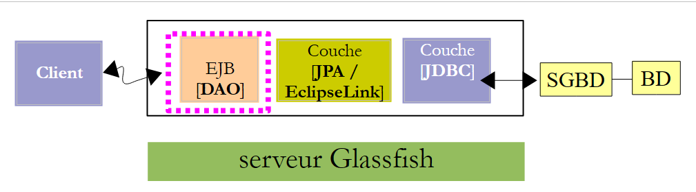 |
Zur Laufzeit kommunizieren Client und Server über das TCP/IP-Netzwerk. Wir werden diesen Datenaustausch nicht programmieren. Für jeden Anwendungsserver gibt es eine Bibliothek, die in die Abhängigkeiten des Clients integriert werden muss. Die für Glassfish heißt [gf-client]. Wir fügen sie hinzu:
 |
- in [1] fügen wir eine Abhängigkeit hinzu,
- in [2] geben wir die Eigenschaften des gewünschten Artefakts an,
- in [3] wird eine große Anzahl von Abhängigkeiten hinzugefügt. Maven lädt diese herunter. Dies kann einige Minuten dauern. Anschließend werden sie im lokalen Maven-Repository gespeichert.
Wir können nun den JUnit-Test erstellen:
 |
- Klicken Sie in [2] mit der rechten Maustaste auf [Test Packages], um einen neuen JUnit-Test zu erstellen,
 |
- in [3] benennen wir die Testklasse und geben ein Paket dafür an [4],
- Wählen Sie in [5] das JUnit 4.x-Framework aus,
- in [6] die generierte Testklasse,
- in [7] die neuen Maven-Projektabhängigkeiten.
Die Datei [pom.xml] sieht dann wie folgt aus:
<project xmlns="http://maven.apache.org/POM/4.0.0" xmlns:xsi="http://www.w3.org/2001/XMLSchema-instance"
xsi:schemaLocation="http://maven.apache.org/POM/4.0.0 http://maven.apache.org/xsd/maven-4.0.0.xsd">
<modelVersion>4.0.0</modelVersion>
<groupId>istia.st</groupId>
<artifactId>mv-client-rdvmedecins-ejb-dao</artifactId>
<version>1.0-SNAPSHOT</version>
<packaging>jar</packaging>
<name>mv-client-rdvmedecins-ejb-dao</name>
<url>http://maven.apache.org</url>
<repositories>
<repository>
<url>http://download.eclipse.org/rt/eclipselink/maven.repo/</url>
<id>eclipselink</id>
<layout>default</layout>
<name>Repository for library Library[eclipselink]</name>
</repository>
<repository>
<url>http://repo1.maven.org/maven2/</url>
<id>junit_4</id>
<layout>default</layout>
<name>Repository for library Library[junit_4]</name>
</repository>
</repositories>
<properties>
<project.build.sourceEncoding>UTF-8</project.build.sourceEncoding>
</properties>
<dependencies>
<dependency>
<groupId>junit</groupId>
<artifactId>junit</artifactId>
<version>4.10</version>
<scope>test</scope>
</dependency>
<dependency>
<groupId>${project.groupId}</groupId>
<artifactId>mv-rdvmedecins-ejb-dao-jpa</artifactId>
<version>${project.version}</version>
<scope>test</scope>
</dependency>
<dependency>
<groupId>org.glassfish.appclient</groupId>
<artifactId>gf-client</artifactId>
<version>3.1.1</version>
<scope>test</scope>
</dependency>
</dependencies>
</project>
Hinweis:
- Zeilen 32–51, die Projektabhängigkeiten,
- Zeilen 13–26: Es wurden zwei Maven-Repositorys definiert, eines für EclipseLink (Zeilen 14–19) und das andere für JUnit4 (Zeilen 20–25).
Die Testklasse sieht wie folgt aus:
package rdvmedecins.tests.dao;
import java.util.Date;
import java.util.List;
import javax.naming.InitialContext;
import javax.naming.NamingException;
import junit.framework.Assert;
import org.junit.BeforeClass;
import org.junit.Test;
import rdvmedecins.dao.IDaoRemote;
import rdvmedecins.jpa.Client;
import rdvmedecins.jpa.Creneau;
import rdvmedecins.jpa.Medecin;
import rdvmedecins.jpa.Rv;
public class JUnitTestDao {
// layer [dao] tested
private static IDaoRemote dao;
// today's date
Date jour = new Date();
@BeforeClass
public static void init() throws NamingException {
// environment initialization JNDI
InitialContext initialContext = new InitialContext();
// dao layer instantiation
dao = (IDaoRemote) initialContext.lookup("rdvmedecins.dao");
}
@Test
public void test1() {
// customer display
List<Client> clients =dao.getAllClients();
display("Liste des clients :", clients);
// physician display
List<Medecin> medecins =dao.getAllMedecins();
display("Liste des médecins :", medecins);
// display doctor's slots
Medecin medecin = medecins.get(0);
List<Creneau> creneaux = dao.getAllCreneaux(medecin);
display(String.format("Liste des créneaux du médecin %s", medecin), creneaux);
// list of doctor's appointments on a given day
display(String.format("Liste des créneaux du médecin %s, le [%s]", medecin, jour), dao.getRvMedecinJour(medecin, jour));
// add a RV
Rv rv = null;
Creneau creneau = creneaux.get(2);
Client client = clients.get(0);
System.out.println(String.format("Ajout d'un Rv le [%s] dans le créneau %s pour le client %s", jour, creneau, client));
rv = dao.ajouterRv(jour, creneau, client);
System.out.println("Rv ajouté");
display(String.format("Liste des Rv du médecin %s, le [%s]", medecin, jour), dao.getRvMedecinJour(medecin, jour));
// add a RV in the same slot on the same day
// must trigger an exception
System.out.println(String.format("Ajout d'un Rv le [%s] dans le créneau %s pour le client %s", jour, creneau, client));
Boolean erreur = false;
try {
rv = dao.ajouterRv(jour, creneau, client);
System.out.println("Rv ajouté");
} catch (Exception ex) {
Throwable th = ex;
while (th != null) {
System.out.println(ex.getMessage());
th = th.getCause();
}
// we note the error
erreur=true;
}
// check for errors
Assert.assertTrue(erreur);
// RV list
display(String.format("Liste des Rv du médecin %s, le [%s]", medecin, jour), dao.getRvMedecinJour(medecin, jour));
// delete a RV
System.out.println("Suppression du Rv ajouté");
dao.supprimerRv(rv);
System.out.println("Rv supprimé");
display(String.format("Liste des Rv du médecin %s, le [%s]", medecin, jour), dao.getRvMedecinJour(medecin, jour));
}
// utility method - displays items in a collection
private static void display(String message, List elements) {
System.out.println(message);
for (Object element : elements) {
System.out.println(element);
}
}
}
- Zeilen 23–29: Die mit @BeforeClass annotierte Methode wird vor allen anderen ausgeführt. Hier erstellen wir eine Referenz auf die Remote-Schnittstelle des EJB [DaoJpa]. Erinnern Sie sich daran, dass wir ihr den JNDI-Namen „rdvmedecins.dao“ gegeben haben,
- Zeilen 34–35: Anzeige der Liste der Clients,
- Zeilen 37–38: Anzeige der Liste der Ärzte,
- Zeilen 40–42: Anzeige der Zeitfenster für den ersten Arzt,
- Zeile 44: Zeigt die Termine des ersten Arztes an dem in Zeile 21 angegebenen Tag an,
- Zeilen 46–51: Fügen Sie einen Termin für den ersten Arzt hinzu, für Zeitfenster Nr. 2 und den in Zeile 21 angegebenen Tag,
- Zeile 52: Zeigt zur Überprüfung die Termine des ersten Arztes für den in Zeile 21 angegebenen Tag an. Es muss mindestens einen geben – den gerade hinzugefügten,
- Zeilen 55–70: Fügen Sie denselben Termin hinzu. Da die Tabelle [RV] eine Eindeutigkeitsbeschränkung hat, muss diese Hinzufügung eine Ausnahme auslösen. Wir überprüfen dies in Zeile 70,
- Zeile 72: Zeigt zur Überprüfung die Termine des ersten Arztes für den in Zeile 21 angegebenen Tag an. Der Termin, den wir hinzufügen wollten, sollte nicht dabei sein,
- Zeilen 74–76: Wir löschen den einzelnen Termin, der hinzugefügt wurde,
- Zeile 77: Zeige die Termine für den ersten Arzt an dem in Zeile 21 angegebenen Tag zur Überprüfung an. Der Termin, den wir gerade gelöscht haben, sollte nicht mehr vorhanden sein.
Dies ist ein Dummy-JUnit-Test. Er enthält nur eine Assertion (Zeile 70). Es handelt sich um einen visuellen Test mit den damit verbundenen Mängeln.
Wenn alles gut geht, sollten die Tests bestehen:
 |
- In [1] erstellen wir das Testprojekt,
- in [2] wird der Test ausgeführt,
- in [3] wurde der Test bestanden.
Schauen wir uns die Testausgabe einmal genauer an:
Der Leser ist eingeladen, diese Protokolle zusammen mit dem Code zu lesen, der sie erzeugt hat. Wir konzentrieren uns auf die Ausnahme, die beim Hinzufügen eines bestehenden Termins aufgetreten ist (Zeilen 41–49). Der Ausnahme-Stack-Trace wird in den Zeilen 42–48 angezeigt. Er ist unerwartet. Kehren wir zum Code für die Methode zurück, die einen Termin hinzufügt:
// add Rv
// day : day of appointment
// creneau: Rv time slot
// customer: customer for whom the appointment is taken
public Rv ajouterRv(Date jour, Creneau creneau, Client client) {
try {
Rv rv = new Rv(null, jour);
rv.setClient(client);
rv.setCreneau(creneau);
System.out.println(String.format("avant persist : %s",rv));
em.persist(rv);
System.out.println(String.format("après persist : %s",rv));
return rv;
} catch (Throwable th) {
throw new RdvMedecinsException(th, 4);
}
}
Sehen wir uns die GlassFish-Protokolle beim Hinzufügen der beiden Termine an:
- Zeile 2: vor dem ersten persist,
- Zeile 3: nach dem ersten „persist“,
- Zeile 4: die INSERT-Anweisung, die ausgeführt wird. Beachten Sie, dass dies nicht gleichzeitig mit dem „persist“-Vorgang geschieht. Wäre dies der Fall, wäre dieser Eintrag vor Zeile 2 erschienen. Der INSERT-Vorgang findet normalerweise am Ende der Transaktion statt, in der die Methode ausgeführt wird,
- Zeile 6: EclipseLink fragt MySQL nach dem zuletzt verwendeten Primärschlüssel ab. Es ruft den Primärschlüssel des neu hinzugefügten Termins ab. Dieser Wert füllt das Feld „id“ der persistierten [Rv]-Entität,
- Zeilen 7–8: Die SELECT-Abfrage, die die Termine des Arztes anzeigt,
- Zeilen 9–10: Der Bildschirm zeigt die zweite Persistenz an,
- Zeilen 11–12: Die INSERT-Anweisung, die ausgeführt wird. Sie sollte eine Ausnahme auslösen. Diese Ausnahme erscheint in den Zeilen 15–16 und ist eindeutig. Sie wird zunächst vom MySQL-JDBC-Treiber aufgrund einer Verletzung der Eindeutigkeitsbeschränkung bei Terminen ausgelöst. Wir können daraus schließen, dass diese Ausnahmen in den JUnit-Testprotokollen zu sehen sein sollten. Dies ist jedoch nicht der Fall:
Sehen wir uns die Client/Server-Architektur des Tests an:
 |
Wenn das [DAO]-EJB eine Ausnahme auslöst, muss diese serialisiert werden, um den Client zu erreichen. Es ist wahrscheinlich, dass dieser Vorgang aus einem mir unbekannten Grund fehlgeschlagen ist. Da unsere vollständige Anwendung nicht in einer Client/Server-Umgebung ausgeführt wird, können wir dieses Problem ignorieren.
Da die EJB der [DAO]-Schicht nun funktionsfähig ist, können wir uns der EJB der [Business]-Schicht zuwenden.
3.5. Die [Business]-Schicht
Kehren wir zur Architektur der Anwendung zurück, die wir gerade entwickeln:
 |
Wir werden ein neues Maven-Projekt für die [Business]-EJB erstellen. Wie oben gezeigt, wird es von dem Maven-Projekt abhängen, das für die [DAO]- und [JPA]-Schichten erstellt wurde.
3.5.1. Das NetBeans-Projekt
Wir erstellen ein neues Maven-Projekt vom Typ EJB. Befolgen Sie dazu einfach die bereits auf Seite 174 beschriebene Vorgehensweise.
 |
- In [1] fügen Sie dem Maven-Projekt für die [Business]-Schicht
- in [2] fügen Sie eine Abhängigkeit hinzu,
- wählen Sie in [3] das Maven-Projekt für die [DAO]- und [JPA]-Schichten aus,
- wählen Sie in [4] den Bereich [provided] aus. Beachten Sie, dass dies bedeutet, dass es für die Kompilierung erforderlich ist, nicht jedoch für die Ausführung des Projekts. Tatsächlich wird das EJB der [Business]-Schicht zusammen mit den EJBs der [DAO]- und [JPA]-Schicht auf dem GlassFish-Server bereitgestellt. Wenn es also ausgeführt wird, sind die EJBs der [DAO]- und [JPA]-Schicht bereits vorhanden,
 |
- in [6] das neue Projekt mit seinen Abhängigkeiten.
Sehen wir uns nun den Quellcode für die [Business]-Schicht an:
 |
Die [Business]-EJB verfügt über die folgende [IMetier]-Schnittstelle:
package rdvmedecins.metier.service;
import java.util.Date;
import java.util.List;
import rdvmedecins.jpa.Client;
import rdvmedecins.jpa.Creneau;
import rdvmedecins.jpa.Medecin;
import rdvmedecins.jpa.Rv;
import rdvmedecins.metier.entites.AgendaMedecinJour;
public interface IMetier {
// dao layer
// customer list
public List<Client> getAllClients();
// list of doctors
public List<Medecin> getAllMedecins();
// list of physician slots
public List<Creneau> getAllCreneaux(Medecin medecin);
// list of doctor's appointments on a given day
public List<Rv> getRvMedecinJour(Medecin medecin, Date jour);
// find a customer identified by its id
public Client getClientById(Long id);
// find a customer identified by its id
public Medecin getMedecinById(Long id);
// find an Rv identified by its id
public Rv getRvById(Long id);
// find a time slot identified by its id
public Creneau getCreneauById(Long id);
// add a RV to the list
public Rv ajouterRv(Date jour, Creneau creneau, Client client);
// delete a RV
public void supprimerRv(Rv rv);
// job
public AgendaMedecinJour getAgendaMedecinJour(Medecin medecin, Date jour);
}
Um diese Schnittstelle zu verstehen, müssen wir uns die Architektur des Projekts in Erinnerung rufen:
 |
Wir haben die Schnittstelle der [DAO]-Schicht definiert (Abschnitt 3.4.4) und festgelegt, dass sie die Anforderungen der [Web]-Schicht, d. h. die Benutzeranforderungen, erfüllt. Die [Web]-Schicht kommuniziert mit der [DAO]-Schicht ausschließlich über die [Business]-Schicht. Dies erklärt, warum sich alle Methoden der [DAO]-Schicht in der [Business]-Schicht befinden. Diese Methoden leiten die Anfrage der [Web]-Schicht lediglich an die [DAO]-Schicht weiter. Mehr nicht.
Während der Analyse der Anwendung ergab sich eine Anforderung: die Möglichkeit, den Terminkalender eines Arztes für einen bestimmten Tag auf einer Webseite anzuzeigen, um zu zeigen, welche Zeitfenster gebucht und welche verfügbar sind. Dies ist typischerweise der Fall, wenn eine Sekretärin eine Anfrage telefonisch entgegennimmt. Der Anrufer bittet um einen Termin an einem bestimmten Tag bei einem bestimmten Arzt. Um diesem Bedarf gerecht zu werden, stellt die [Business]-Schicht die Methode in Zeile 46 bereit.
// job
public AgendaMedecinJour getAgendaMedecinJour(Medecin medecin, Date jour);
Man könnte sich fragen, wo diese Methode platziert werden soll:
- Sie könnte in der [DAO]-Schicht platziert werden. Diese Methode dient jedoch nicht wirklich einem Datenzugriffsbedarf, sondern eher einem geschäftlichen Bedarf;
- wir könnten sie in der [Web]-Schicht platzieren. Das wäre eine schlechte Idee. Denn wenn wir die [Web]-Schicht in eine [Swing]-Schicht ändern, geht die Methode verloren, obwohl der Bedarf weiterhin besteht.
Die Methode nimmt den Arzt und den Tag, für den wir den Terminkalender wünschen, als Parameter entgegen. Sie gibt ein [AgendaMedecinJour]-Objekt zurück, das den Terminkalender des Arztes für diesen Tag darstellt:
package rdvmedecins.metier.entites;
import java.io.Serializable;
import java.text.SimpleDateFormat;
import java.util.Date;
import rdvmedecins.jpa.Medecin;
public class AgendaMedecinJour implements Serializable {
private static final long serialVersionUID = 1L;
// fields
private Medecin medecin;
private Date jour;
private CreneauMedecinJour[] creneauxMedecinJour;
// manufacturers
public AgendaMedecinJour() {
}
public AgendaMedecinJour(Medecin medecin, Date jour, CreneauMedecinJour[] creneauxMedecinJour) {
this.medecin = medecin;
this.jour = jour;
this.creneauxMedecinJour = creneauxMedecinJour;
}
public String toString() {
StringBuffer str = new StringBuffer("");
for (CreneauMedecinJour cr : creneauxMedecinJour) {
str.append(" ");
str.append(cr.toString());
}
return String.format("Agenda[%s,%s,%s]", medecin, new SimpleDateFormat("dd/MM/yyyy").format(jour), str.toString());
}
// getters and setters
...
}
- Zeile 12: der Arzt, zu dem dieser Terminplan gehört,
- Zeile 13: der Tag des Zeitplans,
- Zeile 14: die Zeitfenster des Arztes für diesen Tag.
- Die Klasse enthält Konstruktoren (Zeilen 17, 21) sowie eine benutzerdefinierte toString-Methode (Zeile 27).
Die Klasse [DoctorTimeSlotDay] (Zeile 14) sieht wie folgt aus:
package rdvmedecins.metier.entites;
import java.io.Serializable;
import rdvmedecins.jpa.Creneau;
import rdvmedecins.jpa.Rv;
public class CreneauMedecinJour implements Serializable {
private static final long serialVersionUID = 1L;
// fields
private Creneau creneau;
private Rv rv;
// manufacturers
public CreneauMedecinJour() {
}
public CreneauMedecinJour(Creneau creneau, Rv rv) {
this.creneau=creneau;
this.rv=rv;
}
// toString
@Override
public String toString() {
return String.format("[%s %s]", creneau,rv);
}
// getters and setters
...
}
- Zeile 12: ein Zeitfenster eines Arztes,
- Zeile 13: der zugehörige Termin, null, wenn der Termin frei ist.
Wir sehen, dass das Feld creneauxMedecinJour in Zeile 14 der Klasse [AgendaMedecinJour] es uns ermöglicht, alle Zeitfenster des Arztes mit dem Status „belegt“ oder „frei“ abzurufen. Dies war der Zweck der neuen Methode [getAgendaMedecinJour] der Klasse [IMetier].
Unser EJB [Metier] wird über eine lokale Schnittstelle und eine Remote-Schnittstelle verfügen, die einfach die Hauptschnittstelle [IMetier] erweitern:
package rdvmedecins.metier.service;
import javax.ejb.Local;
@Local
public interface IMetierLocal extends IMetier{
}
package rdvmedecins.metier.service;
import javax.ejb.Remote;
@Remote
public interface IMetierRemote extends IMetier{
}
Die [Metier]-EJB implementiert diese Schnittstellen wie folgt:
package rdvmedecins.metier.service;
import java.io.Serializable;
import java.util.Date;
import java.util.Hashtable;
import java.util.List;
import java.util.Map;
import javax.ejb.EJB;
import javax.ejb.Singleton;
import javax.ejb.TransactionAttribute;
import javax.ejb.TransactionAttributeType;
import rdvmedecins.dao.IDaoLocal;
import rdvmedecins.jpa.Client;
import rdvmedecins.jpa.Creneau;
import rdvmedecins.jpa.Medecin;
import rdvmedecins.jpa.Rv;
import rdvmedecins.metier.entites.AgendaMedecinJour;
import rdvmedecins.metier.entites.CreneauMedecinJour;
@Singleton
@TransactionAttribute(TransactionAttributeType.REQUIRED)
public class Metier implements IMetierLocal, IMetierRemote, Serializable {
// dao layer
@EJB
private IDaoLocal dao;
public Metier() {
}
@Override
public List<Client> getAllClients() {
return dao.getAllClients();
}
@Override
public List<Medecin> getAllMedecins() {
return dao.getAllMedecins();
}
@Override
public List<Creneau> getAllCreneaux(Medecin medecin) {
return dao.getAllCreneaux(medecin);
}
@Override
public List<Rv> getRvMedecinJour(Medecin medecin, Date jour) {
return dao.getRvMedecinJour(medecin, jour);
}
@Override
public Client getClientById(Long id) {
return dao.getClientById(id);
}
@Override
public Medecin getMedecinById(Long id) {
return dao.getMedecinById(id);
}
@Override
public Rv getRvById(Long id) {
return dao.getRvById(id);
}
@Override
public Creneau getCreneauById(Long id) {
return dao.getCreneauById(id);
}
@Override
public Rv ajouterRv(Date jour, Creneau creneau, Client client) {
return dao.ajouterRv(jour, creneau, client);
}
@Override
public void supprimerRv(Rv rv) {
dao.supprimerRv(rv);
}
@Override
public AgendaMedecinJour getAgendaMedecinJour(Medecin medecin, Date jour) {
// list of doctor's time slots
List<Creneau> creneauxHoraires = dao.getAllCreneaux(medecin);
// list of bookings for the same doctor on the same day
List<Rv> reservations = dao.getRvMedecinJour(medecin, jour);
// a dictionary is created from the Rvs taken
Map<Long, Rv> hReservations = new Hashtable<Long, Rv>();
for (Rv resa : reservations) {
hReservations.put(resa.getCreneau().getId(), resa);
}
// create the agenda for the requested day
AgendaMedecinJour agenda = new AgendaMedecinJour();
// the doctor
agenda.setMedecin(medecin);
// the day
agenda.setJour(jour);
// reservation slots
CreneauMedecinJour[] creneauxMedecinJour = new CreneauMedecinJour[creneauxHoraires.size()];
agenda.setCreneauxMedecinJour(creneauxMedecinJour);
// filling reservation slots
for (int i = 0; i < creneauxHoraires.size(); i++) {
// line i agenda
creneauxMedecinJour[i] = new CreneauMedecinJour();
// slot id
creneauxMedecinJour[i].setCreneau(creneauxHoraires.get(i));
// is the slot free or reserved?
if (hReservations.containsKey(creneauxHoraires.get(i).getId())) {
// the slot is occupied - we note the resa
Rv resa = hReservations.get(creneauxHoraires.get(i).getId());
creneauxMedecinJour[i].setRv(resa);
}
}
// we return the result
return agenda;
}
}
- Zeile 22: Die Klasse [Metier] ist ein Singleton-EJB,
- Zeile 23: Jede EJB-Methode wird innerhalb einer Transaktion ausgeführt. Das bedeutet, dass die Transaktion am Anfang der Methode in der [business]-Schicht beginnt. Diese Schicht ruft Methoden in der [DAO]-Schicht auf. Diese Methoden werden innerhalb derselben Transaktion ausgeführt,
- Zeile 24: Das EJB implementiert seine lokalen und Remote-Schnittstellen und ist zudem serialisierbar,
- Zeile 27: eine Referenz auf das EJB in der [DAO]-Schicht,
- Zeile 29: Diese wird dank der Annotation @EJB vom EJB-Container des GlassFish-Servers injiziert. Wenn also die Methoden der [Business]-Klasse ausgeführt werden, ist die Referenz auf das EJB der [DAO]-Schicht initialisiert,
- Zeilen 33–81: Diese Referenz wird verwendet, um den an die [Business]-Schicht gerichteten Aufruf an die [DAO]-Schicht weiterzuleiten,
- Zeile 84: die Methode getAgendaMedecinJour, die den Terminplan eines Arztes für einen bestimmten Tag abruft. Wir überlassen es dem Leser, den Kommentaren zu folgen.
3.5.2. Bereitstellung der [Business]-Schicht
Die [Business]-Schicht ist von der [DAO]-Schicht abhängig. Jede Schicht wurde mit einem EJB implementiert. Um das [Business]-EJB zu testen, müssen wir beide EJBs bereitstellen. Dazu benötigen wir ein Enterprise-Projekt.
 |
- [1], erstellen Sie ein neues Projekt,
- vom Typ Maven [2] und Enterprise-Anwendung [3],
- und geben Sie ihm einen Namen [4]. Das Suffix „ear“ wird automatisch hinzugefügt,
 |
- in [5] wählen wir den GlassFish-Server und Java EE 6 aus,
- in [6] enthält eine Unternehmensanwendung Module, typischerweise EJB-Module und Webmodule. Hier wird die Unternehmensanwendung die Module der beiden von uns erstellten EJBs enthalten. Da diese Module bereits vorhanden sind, aktivieren wir die Kontrollkästchen nicht,
- in [7,8] wurden zwei Projekte erstellt. [8] ist das Unternehmensprojekt, das wir verwenden werden. [7] ist ein Projekt, dessen Zweck mir unklar ist. Ich musste es noch nicht verwenden, und da ich mich noch nicht intensiv mit Maven beschäftigt habe, weiß ich nicht, wozu es dient. Wir werden es also ignorieren.
Nachdem das Enterprise-Projekt nun erstellt wurde, können wir seine Module definieren.
 |
- In [1] erstellen wir eine neue Abhängigkeit,
- in [2] wählen wir das EJB-[DAO]-Projekt aus,
- in [3] geben wir an, dass es sich um ein EJB handelt. Lassen Sie das Feld „Typ“ nicht leer, da in diesem Fall der Jar-Typ verwendet wird, der hier nicht geeignet ist,
- in [4] verwenden wir den [compile]-Gültigkeitsbereich,
- In [5] das Projekt mit seiner neuen Abhängigkeit,
 |
- in [6, 7, 8] wiederholen wir den Vorgang, um das EJB aus der [business]-Schicht hinzuzufügen,
- in [9] die beiden Abhängigkeiten,
- in [10] erstellen wir das Projekt,
 |
- in [11] führen wir es aus,
- in [12] sehen wir auf der Registerkarte [Services], dass das Projekt auf dem GlassFish-Server bereitgestellt wurde. Das bedeutet, dass nun beide EJBs auf dem Server vorhanden sind.
In den GlassFish-Serverprotokollen finden Sie Informationen zur Bereitstellung der beiden EJBs:
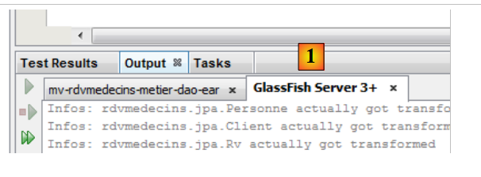 |
- in [1], auf der Registerkarte „GlassFish-Protokolle“.
Dort finden sich folgende Protokolle:
- Zeilen 1–5: Die JPA-Entitäten wurden erkannt,
- Zeile 7: zeigt an, dass die Persistenz-Einheit [dbrdvmedecins2-PU] erfolgreich erstellt wurde und die Verbindung zur zugehörigen Datenbank hergestellt wurde,
- Zeile 8: die portablen Namen der Remote- und lokalen Schnittstellen des EJB [DaoJpa]. „Portabel“ bedeutet, dass sie von allen Anwendungsservern erkannt werden,
- Zeile 9: dasselbe, jedoch mit GlassFish-spezifischen Namen,
- Zeilen 10–11: dasselbe für das EJB [Metier].
Wir verwenden den portablen Namen der Remote-Schnittstelle des EJB [Metier]:
java:global/istia.st_mv-rdvmedecins-metier-dao-ear_ear_1.0-SNAPSHOT/mv-rdvmedecins-ejb-metier-1.0-SNAPSHOT/Metier!rdvmedecins.metier.service.IMetierRemote
Dies benötigen wir beim Testen der [Business]-Schicht.
3.5.3. Testen der [Business]-Schicht
Wie bereits bei der [DAO]-Schicht werden wir die [Business]-Schicht als Teil einer Client/Server-Anwendung testen:
 |
Der Client testet die Remote-Schnittstelle des auf dem GlassFish-Server bereitgestellten [Business]-EJB.
Wir beginnen mit der Erstellung eines neuen Maven-Projekts. Dazu folgen wir dem gleichen Verfahren wie bei der Erstellung des Testprojekts für die [DAO]-Schicht (siehe Abschnitt 3.4.7), mit Ausnahme der Erstellung des JUnit-Tests. Das resultierende Projekt sieht wie folgt aus
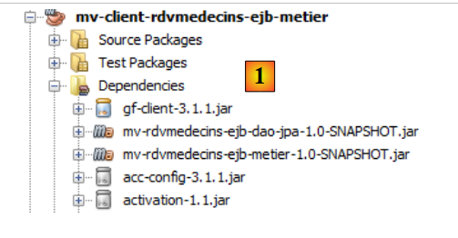 |
- [1] zeigt das erstellte Projekt mit seinen Abhängigkeiten: bezüglich des EJB der [DAO]-Schicht, des EJB der [Business]-Schicht und der [gf-client]-Bibliothek.
Zu diesem Zeitpunkt sieht die [pom.xml]-Datei des Projekts wie folgt aus:
<project xmlns="http://maven.apache.org/POM/4.0.0" xmlns:xsi="http://www.w3.org/2001/XMLSchema-instance"
xsi:schemaLocation="http://maven.apache.org/POM/4.0.0 http://maven.apache.org/xsd/maven-4.0.0.xsd">
<modelVersion>4.0.0</modelVersion>
<groupId>istia.st</groupId>
<artifactId>mv-client-rdvmedecins-ejb-metier</artifactId>
<version>1.0-SNAPSHOT</version>
<packaging>jar</packaging>
<name>mv-client-rdvmedecins-ejb-metier</name>
<url>http://maven.apache.org</url>
<properties>
<project.build.sourceEncoding>UTF-8</project.build.sourceEncoding>
</properties>
<dependencies>
<dependency>
<groupId>org.glassfish.appclient</groupId>
<artifactId>gf-client</artifactId>
<version>3.1.1</version>
</dependency>
<dependency>
<groupId>${project.groupId}</groupId>
<artifactId>mv-rdvmedecins-ejb-dao-jpa</artifactId>
<version>${project.version}</version>
</dependency>
<dependency>
<groupId>${project.groupId}</groupId>
<artifactId>mv-rdvmedecins-ejb-metier</artifactId>
<version>${project.version}</version>
</dependency>
</dependencies>
</project>
Stelle sicher, dass du über die in den Zeilen 17–33 beschriebenen Abhängigkeiten verfügst. Der Test wird eine einfache Konsolenklasse sein:
 |
Der Code für die Klasse [ClientRdvMedecinsMetier] lautet wie folgt:
package istia.st.client;
import java.util.Date;
import java.util.List;
import javax.naming.InitialContext;
import rdvmedecins.jpa.Client;
import rdvmedecins.jpa.Creneau;
import rdvmedecins.jpa.Medecin;
import rdvmedecins.jpa.Rv;
import rdvmedecins.metier.entites.AgendaMedecinJour;
import rdvmedecins.metier.service.IMetierRemote;
public class ClientRdvMedecinsMetier {
// the remote interface name of the EJB [Metier]
private static String IDaoRemoteName = "java:global/istia.st_mv-rdvmedecins-metier-dao-ear_ear_1.0-SNAPSHOT/mv-rdvmedecins-ejb-metier-1.0-SNAPSHOT/Metier!rdvmedecins.metier.service.IMetierRemote";
// today's date
private static Date jour = new Date();
public static void main(String[] args) {
try {
// context JNDI of Glassfish server
InitialContext initialContext = new InitialContext();
// reference on remote [metier] layer
IMetierRemote metier = (IMetierRemote) initialContext.lookup(IDaoRemoteName);
// customer display
List<Client> clients = metier.getAllClients();
display("Liste des clients :", clients);
// physician display
List<Medecin> medecins = metier.getAllMedecins();
display("Liste des médecins :", medecins);
// display doctor's slots
Medecin medecin = medecins.get(0);
List<Creneau> creneaux = metier.getAllCreneaux(medecin);
display(String.format("Liste des créneaux du médecin %s", medecin), creneaux);
// list of doctor's appointments on a given day
display(String.format("Liste des rendez-vous du médecin %s, le [%s]", medecin, jour), metier.getRvMedecinJour(medecin, jour));
// calendar display
AgendaMedecinJour agenda = metier.getAgendaMedecinJour(medecin, jour);
System.out.println(agenda);
// add a RV to the list
Rv rv = null;
Creneau creneau = creneaux.get(2);
Client client = clients.get(0);
System.out.println(String.format("Ajout d'un Rv le [%s] dans le créneau %s pour le client %s", jour, creneau, client));
rv = metier.ajouterRv(jour, creneau, client);
System.out.println("Rv ajouté");
display(String.format("Liste des Rv du médecin %s, le [%s]", medecin, jour), metier.getRvMedecinJour(medecin, jour));
// calendar display
agenda = metier.getAgendaMedecinJour(medecin, jour);
System.out.println(agenda);
// delete a RV
System.out.println("Suppression du Rv ajouté");
metier.supprimerRv(rv);
System.out.println("Rv supprimé");
display(String.format("Liste des Rv du médecin %s, le [%s]", medecin, jour), metier.getRvMedecinJour(medecin, jour));
// calendar display
agenda = metier.getAgendaMedecinJour(medecin, jour);
System.out.println(agenda);
} catch (Throwable ex) {
System.out.println("Erreur...");
while (ex != null) {
System.out.println(String.format("%s : %s", ex.getClass().getName(), ex.getMessage()));
ex = ex.getCause();
}
}
}
// utility method - displays items in a collection
private static void display(String message, List elements) {
System.out.println(message);
for (Object element : elements) {
System.out.println(element);
}
}
}
- Zeile 18: Der portable Name der Remote-Schnittstelle des EJB [Metier] wurde aus den GlassFish-Protokollen entnommen,
- Zeilen 24–27: Es wird eine Referenz auf die Remote-Schnittstelle des EJB [Metier] abgerufen,
- Zeilen 29–30: Anzeige der Clients,
- Zeilen 32–33: Anzeige der Ärzte,
- Zeilen 35–37: Anzeige der verfügbaren Zeitfenster eines Arztes,
- Zeile 39: Anzeige der Termine eines Arztes an einem bestimmten Tag,
- Zeilen 41–42: Der Terminkalender dieses Arztes für denselben Tag,
- Zeilen 44–49: Einen Termin hinzufügen,
- Zeile 50: Zeigt die Termine des Arztes an. Es sollte noch einer hinzukommen,
- Zeilen 52–53: Zeigt den Terminkalender des Arztes an. Der hinzugefügte Termin sollte sichtbar sein,
- Zeilen 55–57: Löschen des soeben hinzugefügten Termins,
- Zeile 58: Dies sollte sich in der Terminliste des Arztes widerspiegeln,
- Zeilen 60–61: und in ihrem Kalender.
Wir führen den Test durch:
 |  |
Die resultierenden Bildschirmanzeigen sehen wie folgt aus:
Liste des clients :
Client[1,Mr,Jules,MARTIN]
Client[2,Mme,Christine,GERMAN]
Client[3,Mr,Jules,JACQUARD]
Client[4,Melle,Brigitte,BISTROU]
Liste des médecins :
Médecin[1,Mme,Marie,PELISSIER]
Médecin[2,Mr,Jacques,BROMARD]
Médecin[3,Mr,Philippe,JANDOT]
Médecin[4,Melle,Justine,JACQUEMOT]
Liste des créneaux du médecin Médecin[1,Mme,Marie,PELISSIER]
Creneau [1, 1, 8:0, 8:20,Médecin[1,Mme,Marie,PELISSIER]]
Creneau [2, 1, 8:20, 8:40,Médecin[1,Mme,Marie,PELISSIER]]
Creneau [3, 1, 8:40, 9:0,Médecin[1,Mme,Marie,PELISSIER]]
Creneau [4, 1, 9:0, 9:20,Médecin[1,Mme,Marie,PELISSIER]]
Creneau [5, 1, 9:20, 9:40,Médecin[1,Mme,Marie,PELISSIER]]
Creneau [6, 1, 9:40, 10:0,Médecin[1,Mme,Marie,PELISSIER]]
Creneau [7, 1, 10:0, 10:20,Médecin[1,Mme,Marie,PELISSIER]]
Creneau [8, 1, 10:20, 10:40,Médecin[1,Mme,Marie,PELISSIER]]
Creneau [9, 1, 10:40, 11:0,Médecin[1,Mme,Marie,PELISSIER]]
Creneau [10, 1, 11:0, 11:20,Médecin[1,Mme,Marie,PELISSIER]]
Creneau [11, 1, 11:20, 11:40,Médecin[1,Mme,Marie,PELISSIER]]
Creneau [12, 1, 11:40, 12:0,Médecin[1,Mme,Marie,PELISSIER]]
Creneau [13, 1, 14:0, 14:20,Médecin[1,Mme,Marie,PELISSIER]]
Creneau [14, 1, 14:20, 14:40,Médecin[1,Mme,Marie,PELISSIER]]
Creneau [15, 1, 14:40, 15:0,Médecin[1,Mme,Marie,PELISSIER]]
Creneau [16, 1, 15:0, 15:20,Médecin[1,Mme,Marie,PELISSIER]]
Creneau [17, 1, 15:20, 15:40,Médecin[1,Mme,Marie,PELISSIER]]
Creneau [18, 1, 15:40, 16:0,Médecin[1,Mme,Marie,PELISSIER]]
Creneau [19, 1, 16:0, 16:20,Médecin[1,Mme,Marie,PELISSIER]]
Creneau [20, 1, 16:20, 16:40,Médecin[1,Mme,Marie,PELISSIER]]
Creneau [21, 1, 16:40, 17:0,Médecin[1,Mme,Marie,PELISSIER]]
Creneau [22, 1, 17:0, 17:20,Médecin[1,Mme,Marie,PELISSIER]]
Creneau [23, 1, 17:20, 17:40,Médecin[1,Mme,Marie,PELISSIER]]
Creneau [24, 1, 17:40, 18:0,Médecin[1,Mme,Marie,PELISSIER]]
Liste des créneaux du médecin Médecin[1,Mme,Marie,PELISSIER], le [Wed May 23 16:25:26 CEST 2012]
Agenda[Médecin[1,Mme,Marie,PELISSIER],23/05/2012, [Creneau [1, 1, 8:0, 8:20,Médecin[1,Mme,Marie,PELISSIER]] null] [Creneau [2, 1, 8:20, 8:40,Médecin[1,Mme,Marie,PELISSIER]] null] [Creneau [3, 1, 8:40, 9:0,Médecin[1,Mme,Marie,PELISSIER]] null] [Creneau [4, 1, 9:0, 9:20,Médecin[1,Mme,Marie,PELISSIER]] null] [Creneau [5, 1, 9:20, 9:40,Médecin[1,Mme,Marie,PELISSIER]] null] [Creneau [6, 1, 9:40, 10:0,Médecin[1,Mme,Marie,PELISSIER]] null] [Creneau [7, 1, 10:0, 10:20,Médecin[1,Mme,Marie,PELISSIER]] null] [Creneau [8, 1, 10:20, 10:40,Médecin[1,Mme,Marie,PELISSIER]] null] [Creneau [9, 1, 10:40, 11:0,Médecin[1,Mme,Marie,PELISSIER]] null] [Creneau [10, 1, 11:0, 11:20,Médecin[1,Mme,Marie,PELISSIER]] null] [Creneau [11, 1, 11:20, 11:40,Médecin[1,Mme,Marie,PELISSIER]] null] [Creneau [12, 1, 11:40, 12:0,Médecin[1,Mme,Marie,PELISSIER]] null] [Creneau [13, 1, 14:0, 14:20,Médecin[1,Mme,Marie,PELISSIER]] null] [Creneau [14, 1, 14:20, 14:40,Médecin[1,Mme,Marie,PELISSIER]] null] [Creneau [15, 1, 14:40, 15:0,Médecin[1,Mme,Marie,PELISSIER]] null] [Creneau [16, 1, 15:0, 15:20,Médecin[1,Mme,Marie,PELISSIER]] null] [Creneau [17, 1, 15:20, 15:40,Médecin[1,Mme,Marie,PELISSIER]] null] [Creneau [18, 1, 15:40, 16:0,Médecin[1,Mme,Marie,PELISSIER]] null] [Creneau [19, 1, 16:0, 16:20,Médecin[1,Mme,Marie,PELISSIER]] null] [Creneau [20, 1, 16:20, 16:40,Médecin[1,Mme,Marie,PELISSIER]] null] [Creneau [21, 1, 16:40, 17:0,Médecin[1,Mme,Marie,PELISSIER]] null] [Creneau [22, 1, 17:0, 17:20,Médecin[1,Mme,Marie,PELISSIER]] null] [Creneau [23, 1, 17:20, 17:40,Médecin[1,Mme,Marie,PELISSIER]] null] [Creneau [24, 1, 17:40, 18:0,Médecin[1,Mme,Marie,PELISSIER]] null]]
Ajout d'un Rv le [Wed May 23 16:25:26 CEST 2012] dans le créneau Creneau [3, 1, 8:40, 9:0,Médecin[1,Mme,Marie,PELISSIER]] pour le client Client[1,Mr,Jules,MARTIN]
Rv ajouté
Liste des Rv du médecin Médecin[1,Mme,Marie,PELISSIER], le [Wed May 23 16:25:26 CEST 2012]
Rv[252, Creneau [3, 1, 8:40, 9:0,Médecin[1,Mme,Marie,PELISSIER]], Client[1,Mr,Jules,MARTIN]]
Agenda[Médecin[1,Mme,Marie,PELISSIER],23/05/2012, [Creneau [1, 1, 8:0, 8:20,Médecin[1,Mme,Marie,PELISSIER]] null] [Creneau [2, 1, 8:20, 8:40,Médecin[1,Mme,Marie,PELISSIER]] null] [Creneau [3, 1, 8:40, 9:0,Médecin[1,Mme,Marie,PELISSIER]] Rv[252, Creneau [3, 1, 8:40, 9:0,Médecin[1,Mme,Marie,PELISSIER]], Client[1,Mr,Jules,MARTIN]]] [Creneau [4, 1, 9:0, 9:20,Médecin[1,Mme,Marie,PELISSIER]] null] [Creneau [5, 1, 9:20, 9:40,Médecin[1,Mme,Marie,PELISSIER]] null] [Creneau [6, 1, 9:40, 10:0,Médecin[1,Mme,Marie,PELISSIER]] null] [Creneau [7, 1, 10:0, 10:20,Médecin[1,Mme,Marie,PELISSIER]] null] [Creneau [8, 1, 10:20, 10:40,Médecin[1,Mme,Marie,PELISSIER]] null] [Creneau [9, 1, 10:40, 11:0,Médecin[1,Mme,Marie,PELISSIER]] null] [Creneau [10, 1, 11:0, 11:20,Médecin[1,Mme,Marie,PELISSIER]] null] [Creneau [11, 1, 11:20, 11:40,Médecin[1,Mme,Marie,PELISSIER]] null] [Creneau [12, 1, 11:40, 12:0,Médecin[1,Mme,Marie,PELISSIER]] null] [Creneau [13, 1, 14:0, 14:20,Médecin[1,Mme,Marie,PELISSIER]] null] [Creneau [14, 1, 14:20, 14:40,Médecin[1,Mme,Marie,PELISSIER]] null] [Creneau [15, 1, 14:40, 15:0,Médecin[1,Mme,Marie,PELISSIER]] null] [Creneau [16, 1, 15:0, 15:20,Médecin[1,Mme,Marie,PELISSIER]] null] [Creneau [17, 1, 15:20, 15:40,Médecin[1,Mme,Marie,PELISSIER]] null] [Creneau [18, 1, 15:40, 16:0,Médecin[1,Mme,Marie,PELISSIER]] null] [Creneau [19, 1, 16:0, 16:20,Médecin[1,Mme,Marie,PELISSIER]] null] [Creneau [20, 1, 16:20, 16:40,Médecin[1,Mme,Marie,PELISSIER]] null] [Creneau [21, 1, 16:40, 17:0,Médecin[1,Mme,Marie,PELISSIER]] null] [Creneau [22, 1, 17:0, 17:20,Médecin[1,Mme,Marie,PELISSIER]] null] [Creneau [23, 1, 17:20, 17:40,Médecin[1,Mme,Marie,PELISSIER]] null] [Creneau [24, 1, 17:40, 18:0,Médecin[1,Mme,Marie,PELISSIER]] null]]
Suppression du Rv ajouté
Rv supprimé
Liste des Rv du médecin Médecin[1,Mme,Marie,PELISSIER], le [Wed May 23 16:25:26 CEST 2012]
Agenda[Médecin[1,Mme,Marie,PELISSIER],23/05/2012, [Creneau [1, 1, 8:0, 8:20,Médecin[1,Mme,Marie,PELISSIER]] null] [Creneau [2, 1, 8:20, 8:40,Médecin[1,Mme,Marie,PELISSIER]] null] [Creneau [3, 1, 8:40, 9:0,Médecin[1,Mme,Marie,PELISSIER]] null] [Creneau [4, 1, 9:0, 9:20,Médecin[1,Mme,Marie,PELISSIER]] null] [Creneau [5, 1, 9:20, 9:40,Médecin[1,Mme,Marie,PELISSIER]] null] [Creneau [6, 1, 9:40, 10:0,Médecin[1,Mme,Marie,PELISSIER]] null] [Creneau [7, 1, 10:0, 10:20,Médecin[1,Mme,Marie,PELISSIER]] null] [Creneau [8, 1, 10:20, 10:40,Médecin[1,Mme,Marie,PELISSIER]] null] [Creneau [9, 1, 10:40, 11:0,Médecin[1,Mme,Marie,PELISSIER]] null] [Creneau [10, 1, 11:0, 11:20,Médecin[1,Mme,Marie,PELISSIER]] null] [Creneau [11, 1, 11:20, 11:40,Médecin[1,Mme,Marie,PELISSIER]] null] [Creneau [12, 1, 11:40, 12:0,Médecin[1,Mme,Marie,PELISSIER]] null] [Creneau [13, 1, 14:0, 14:20,Médecin[1,Mme,Marie,PELISSIER]] null] [Creneau [14, 1, 14:20, 14:40,Médecin[1,Mme,Marie,PELISSIER]] null] [Creneau [15, 1, 14:40, 15:0,Médecin[1,Mme,Marie,PELISSIER]] null] [Creneau [16, 1, 15:0, 15:20,Médecin[1,Mme,Marie,PELISSIER]] null] [Creneau [17, 1, 15:20, 15:40,Médecin[1,Mme,Marie,PELISSIER]] null] [Creneau [18, 1, 15:40, 16:0,Médecin[1,Mme,Marie,PELISSIER]] null] [Creneau [19, 1, 16:0, 16:20,Médecin[1,Mme,Marie,PELISSIER]] null] [Creneau [20, 1, 16:20, 16:40,Médecin[1,Mme,Marie,PELISSIER]] null] [Creneau [21, 1, 16:40, 17:0,Médecin[1,Mme,Marie,PELISSIER]] null] [Creneau [22, 1, 17:0, 17:20,Médecin[1,Mme,Marie,PELISSIER]] null] [Creneau [23, 1, 17:20, 17:40,Médecin[1,Mme,Marie,PELISSIER]] null] [Creneau [24, 1, 17:40, 18:0,Médecin[1,Mme,Marie,PELISSIER]] null]]
- Zeile 37: Terminplan von Frau PELISSIER, 23. Mai 2012. Es sind keine Termine reserviert,
- Zeile 39: Hinzufügen eines Termins,
- Zeile 42: Neuer Terminkalender von Frau PELISSIER. Ein Termin ist nun für Herrn MARTIN reserviert,
- Zeile 44: Der Termin wurde gelöscht,
- Zeile 46: Der Kalender von Frau PELISSIER zeigt an, dass kein Termin reserviert ist.
Wir betrachten nun die Ebenen [CAD] und [business] als betriebsbereit. Wir müssen noch die Ebene [web] unter Verwendung des JSF-Frameworks schreiben. Dazu nutzen wir das zu Beginn dieses Dokuments erworbene Wissen.
3.6. Die [Web]-Schicht
Kehren wir zu der Architektur zurück, die derzeit im Aufbau ist:
 |
Wir werden die letzte Schicht, die [Web]-Schicht, erstellen.
3.6.1. Das NetBeans-Projekt
Wir erstellen ein Maven-Projekt:
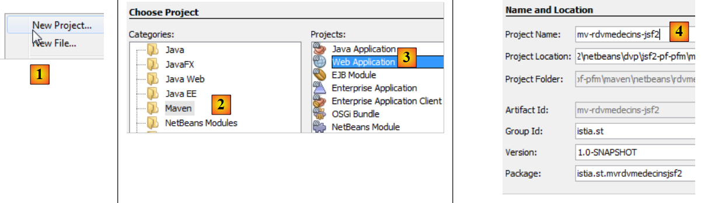 |
- In [1] erstellen wir ein neues Projekt,
- in [2, 3] ein Maven-Projekt vom Typ [Webanwendung],
- in [4] geben wir ihm einen Namen,
 |
- in [5] den GlassFish-Server und Java EE 6 Web auswählen,
- in [6] das so erstellte Projekt,
- in [7] das Projekt nach dem Entfernen der Seite [index.jsp] und des Pakets in [Source Packages],
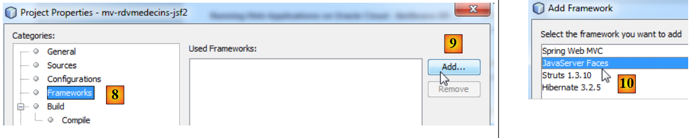 |
- in [8, 9], in den Projekteigenschaften ein Framework hinzufügen,
- in [10] wählen Sie „Java Server Faces“ aus,
 |
- in [11] die Java Server Faces-Konfiguration. Behalten Sie die Standardwerte bei. Beachten Sie, dass JSF 2 verwendet wird,
- in [12] wird das Projekt dann auf zwei Arten geändert: Es wird eine [web.xml]-Datei sowie eine [index.html]-Seite generiert.
Die [web.xml]-Datei sieht wie folgt aus:
<?xml version="1.0" encoding="UTF-8"?>
<web-app version="3.0" xmlns="http://java.sun.com/xml/ns/javaee" xmlns:xsi="http://www.w3.org/2001/XMLSchema-instance" xsi:schemaLocation="http://java.sun.com/xml/ns/javaee http://java.sun.com/xml/ns/javaee/web-app_3_0.xsd">
<context-param>
<param-name>javax.faces.PROJECT_STAGE</param-name>
<param-value>Development</param-value>
</context-param>
<servlet>
<servlet-name>Faces Servlet</servlet-name>
<servlet-class>javax.faces.webapp.FacesServlet</servlet-class>
<load-on-startup>1</load-on-startup>
</servlet>
<servlet-mapping>
<servlet-name>Faces Servlet</servlet-name>
<url-pattern>/faces/*</url-pattern>
</servlet-mapping>
<session-config>
<session-timeout>
30
</session-timeout>
</session-config>
<welcome-file-list>
<welcome-file>faces/index.xhtml</welcome-file>
</welcome-file-list>
</web-app>
Diese Datei ist uns bereits begegnet.
- Zeilen 7–11: Definieren das Servlet, das alle an die Anwendung gerichteten Anfragen verarbeitet. Dies ist das JSF-Servlet,
- Zeilen 12–15: definieren die von diesem Servlet verarbeiteten URLs. Dies sind URLs der Form /faces/*,
- Zeilen 21–23: definieren die Seite [index.xhtml] als Startseite.
Diese Seite sieht wie folgt aus:
<?xml version='1.0' encoding='UTF-8' ?>
<!DOCTYPE html PUBLIC "-//W3C//DTD XHTML 1.0 Transitional//EN" "http://www.w3.org/TR/xhtml1/DTD/xhtml1-transitional.dtd">
<html xmlns="http://www.w3.org/1999/xhtml"
xmlns:h="http://java.sun.com/jsf/html">
<h:head>
<title>Facelet Title</title>
</h:head>
<h:body>
Hello from Facelets
</h:body>
</html>
Das haben wir schon einmal gesehen. Wir können dieses Projekt ausführen:
 |
- In [1] führen wir das Projekt aus und erhalten das Ergebnis [2] im Browser.
Wir stellen nun das vollständige Projekt vor und gehen anschließend detailliert auf seine verschiedenen Komponenten ein.
 |
- in [1], die XHTML-Seiten des Projekts,
- in [2] der Java-Code,
- in [3] die Meldungsdateien, da die Anwendung internationalisiert ist,
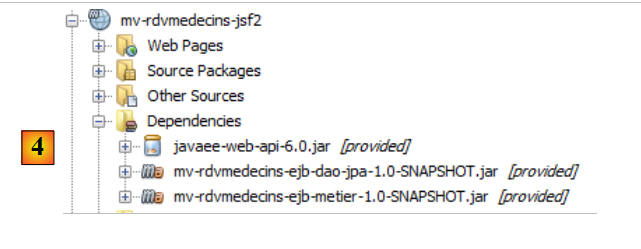 |
- in [4] die Projektabhängigkeiten.
3.6.2. Projektabhängigkeiten
Kehren wir zur Projektarchitektur zurück:
 |
Die JSF-Schicht stützt sich auf die Schichten [business], [DAO] und [JPA]. Diese drei Schichten sind in den beiden von uns erstellten Maven-Projekten gekapselt, was die Projektabhängigkeiten erklärt [4]. Schauen wir uns kurz an, wie diese Abhängigkeiten hinzugefügt werden:
 |
- In [1] verwenden wir ejb, um anzugeben, dass die Abhängigkeit zu einem EJB-Projekt besteht,
- in [2] geben wir [provided] ein. Der Grund dafür ist, dass das Web-Projekt zusammen mit den beiden EJB-Projekten bereitgestellt wird. Daher muss es die EJB-JARs nicht enthalten.
3.6.3. Projektkonfiguration
Die Projektkonfiguration entspricht derjenigen der JSF-Projekte, die wir zu Beginn dieses Dokuments behandelt haben. Wir listen die Konfigurationsdateien auf, ohne sie erneut zu erläutern.
 | 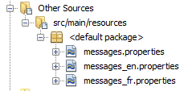 |
[web.xml]: Konfiguriert die Webanwendung.
<?xml version="1.0" encoding="UTF-8"?>
<web-app version="3.0" xmlns="http://java.sun.com/xml/ns/javaee" xmlns:xsi="http://www.w3.org/2001/XMLSchema-instance" xsi:schemaLocation="http://java.sun.com/xml/ns/javaee http://java.sun.com/xml/ns/javaee/web-app_3_0.xsd">
<context-param>
<param-name>javax.faces.PROJECT_STAGE</param-name>
<param-value>Production</param-value>
</context-param>
<context-param>
<param-name>javax.faces.FACELETS_SKIP_COMMENTS</param-name>
<param-value>true</param-value>
</context-param>
<servlet>
<servlet-name>Faces Servlet</servlet-name>
<servlet-class>javax.faces.webapp.FacesServlet</servlet-class>
<load-on-startup>1</load-on-startup>
</servlet>
<servlet-mapping>
<servlet-name>Faces Servlet</servlet-name>
<url-pattern>/faces/*</url-pattern>
</servlet-mapping>
<session-config>
<session-timeout>
30
</session-timeout>
</session-config>
<welcome-file-list>
<welcome-file>faces/index.xhtml</welcome-file>
</welcome-file-list>
<error-page>
<error-code>500</error-code>
<location>/faces/exception.xhtml</location>
</error-page>
<error-page>
<exception-type>Exception</exception-type>
<location>/faces/exception.xhtml</location>
</error-page>
</web-app>
Beachten Sie, dass in Zeile 26 die Seite [index.xhtml] die Startseite der Anwendung ist.
[faces-config.xml]: Konfiguriert die JSF-Anwendung
<?xml version='1.0' encoding='UTF-8'?>
<!-- =========== FULL CONFIGURATION FILE ================================== -->
<faces-config version="2.0"
xmlns="http://java.sun.com/xml/ns/javaee"
xmlns:xsi="http://www.w3.org/2001/XMLSchema-instance"
xsi:schemaLocation="http://java.sun.com/xml/ns/javaee http://java.sun.com/xml/ns/javaee/web-facesconfig_2_0.xsd">
<application>
<resource-bundle>
<base-name>
messages
</base-name>
<var>msg</var>
</resource-bundle>
<message-bundle>messages</message-bundle>
</application>
</faces-config>
[beans.xml]: leer, aber für die Annotation @Named erforderlich
<?xml version="1.0" encoding="UTF-8"?>
<beans xmlns="http://java.sun.com/xml/ns/javaee"
xmlns:xsi="http://www.w3.org/2001/XMLSchema-instance"
xsi:schemaLocation="http://java.sun.com/xml/ns/javaee http://java.sun.com/xml/ns/javaee/beans_1_0.xsd">
</beans>
[styles.css]: das Stylesheet der Anwendung
.reservationsHeaders {
text-align: center;
font-style: italic;
color: Snow;
background: Teal;
}
.creneau {
height: 25px;
text-align: center;
background: MediumTurquoise;
}
.client {
text-align: left;
background: PowderBlue;
}
.action {
width: 6em;
text-align: left;
color: Black;
background: MediumTurquoise;
}
.erreursHeaders {
background: Teal;
background-color: #ff6633;
color: Snow;
font-style: italic;
text-align: center
}
.erreurClasse {
background: MediumTurquoise;
background-color: #ffcc66;
height: 25px;
text-align: center
}
.erreurMessage {
background: PowderBlue;
background-color: #ffcc99;
text-align: left
}
[messages_fr.properties]: die französische Sprachdatei
# layout
layout.entete=Les M\u00e9decins Associ\u00e9s
layout.basdepage=ISTIA, universit\u00e9 d'Angers
layout.entete.langue1=Fran\u00e7ais
layout.entete.langue2=Anglais
# exception
exception.header=L'exception suivante s'est produite
exception.httpCode=Code HTTP de l'erreur
exception.message=Message de l'exception
exception.requestUri=Url demand\u00e9e lors de l'erreur
exception.servletName=Nom de la servlet demand\u00e9e lorsque l'erreur s'est produite
# formulaire 1
form1.titre=R\u00e9servations
form1.medecin=M\u00e9decin
form1.jour=Jour (jj/mm/aaaa)
form1.button.agenda=Agenda
form1.jour.required=date requise
form1.jour.erreur=date erron\u00e9e
# formulaire 2
form2.titre=Agenda de {0} {1} {2} le {3}
form2.titre_detail=Agenda de {0} {1} {2} le {3}
form2.creneauHoraire=Cr\u00e9neau horaire
form2.client=Client
form2.accueil=Accueil
form2.supprimer=Supprimer
form2.reserver=R\u00e9server
# formulaire 3
form3.titre=Prise de rendez-vous de {0} {1} {2}, le {3} dans le cr\u00e9neau {4,number,#00}:{5,number,#00} - {6,number,#00}:{7,number,#00}
form3.titre_detail=Prise de rendez-vous de {0} {1} {2}, le {3} dans le cr\u00e9neau {4,number,#00}:{5,number,#00} - {6,number,#00}:{7,number,#00}
form3.client=Client
form3.valider=Valider
form3.annuler=Annuler
# erreur
erreur.titre=Une erreur s'est produite.
erreur.message=Message d'erreur
erreur.accueil=Page d'accueil
erreur.classe=Cause
[messages_en.properties]: die englische Meldungsdatei
# layout
layout.entete=Associated Doctors
layout.basdepage=ISTIA, Angers university
layout.entete.langue1=French
layout.entete.langue2=English
# exception
exception.header=The following exceptions occurred
exception.httpCode=Error HTTP code
exception.message=Exception message
exception.requestUri=Url targeted when error occurred
exception.servletName=Servlet targeted's name when error occurred
# formulaire 1
form1.titre=Reservations
form1.medecin=Doctor
form1.jour=Date (dd/mm/yyyy)
form1.button.agenda=Diary
form1.jour.required=The date is required
form1.jour.erreur=The date is invalid
# formulaire 2
form2.titre={0} {1} {2}'' diary on {3}
form2.titre_detail={0} {1} {2}'' diary on {3}
form2.creneauHoraire=Time Period
form2.client=Client
form2.accueil=Welcome Page
form2.supprimer=Delete
form2.reserver=Reserve
# formulaire 3
form3.titre=Reservation for {0} {1} {2}, on {3} in the time period {4,number,#00}:{5,number,#00} - {6,number,#00}:{7,number,#00}
form3.titre_detail=Reservation for {0} {1} {2}, on {3} in the time period {4,number,#00}:{5,number,#00} - {6,number,#00}:{7,number,#00}
form3.client=Client
form3.valider=Submit
form3.annuler=Cancel
# erreur
erreur.titre=An error occurred
erreur.message=Error message
erreur.accueil=Welcome Page
erreur.classe=Cause
3.6.4. Projektansichten
Schauen wir uns einmal an, wie die Anwendung funktioniert. Die Startseite sieht wie folgt aus:
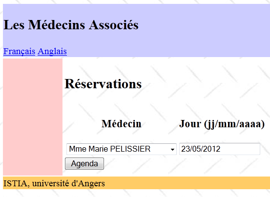 |
Von dieser Startseite aus führt der Benutzer (Verwaltungsmitarbeiter, Arzt) eine Reihe von Aktionen durch. Diese stellen wir im Folgenden vor. Die Ansicht auf der linken Seite zeigt die Ansicht, aus der der Benutzer eine Anfrage stellt; die Ansicht auf der rechten Seite zeigt die vom Server gesendete Antwort.
 |
 |
 |
 |
 |
 |
Schließlich kann auch eine Fehlerseite angezeigt werden:
 |
Diese verschiedenen Ansichten werden von den folgenden Seiten des Webprojekts generiert:
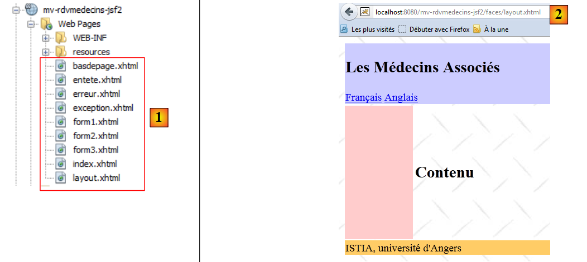 |
- In [1] übernehmen die Seiten [basdepage, entete, layout] die Formatierung aller Ansichten,
- in [2] die von [layout.xhtml] generierte Ansicht.
Hier kam die Facelets-Technologie zum Einsatz. Diese wurde in Abschnitt 2.11 beschrieben. Wir stellen lediglich den Code für die XHTML-Seiten bereit, die für das Layout verwendet werden:
[entete.xhtml]
<?xml version='1.0' encoding='UTF-8' ?>
<!DOCTYPE html PUBLIC "-//W3C//DTD XHTML 1.0 Transitional//EN" "http://www.w3.org/TR/xhtml1/DTD/xhtml1-transitional.dtd">
<html xmlns="http://www.w3.org/1999/xhtml"
xmlns:h="http://java.sun.com/jsf/html"
xmlns:f="http://java.sun.com/jsf/core"
xmlns:ui="http://java.sun.com/jsf/facelets">
<body>
<h2><h:outputText value="#{msg['layout.entete']}"/></h2>
<div align="left">
<h:commandLink value="#{msg['layout.entete.langue1']}" actionListener="#{changeLocale.setFrenchLocale}"/>
<h:outputText value=" "/>
<h:commandLink value="#{msg['layout.entete.langue2']}" actionListener="#{changeLocale.setEnglishLocale}"/>
</div>
</body>
</html>
Beachten Sie die Zeilen 10–12, die beiden Links zum Ändern der Sprache der Anwendung.
[basdepage.xhtml]
<?xml version='1.0' encoding='UTF-8' ?>
<!DOCTYPE html PUBLIC "-//W3C//DTD XHTML 1.0 Transitional//EN" "http://www.w3.org/TR/xhtml1/DTD/xhtml1-transitional.dtd">
<html xmlns="http://www.w3.org/1999/xhtml"
xmlns:h="http://java.sun.com/jsf/html">
<body>
<h:outputText value="#{msg['layout.basdepage']}"/>
</body>
</html>
[layout.xhtml]
<?xml version='1.0' encoding='UTF-8' ?>
<!DOCTYPE html PUBLIC "-//W3C//DTD XHTML 1.0 Transitional//EN" "http://www.w3.org/TR/xhtml1/DTD/xhtml1-transitional.dtd">
<html xmlns="http://www.w3.org/1999/xhtml"
xmlns:h="http://java.sun.com/jsf/html"
xmlns:f="http://java.sun.com/jsf/core"
xmlns:ui="http://java.sun.com/jsf/facelets">
<f:view locale="#{changeLocale.locale}">
<h:head>
<title>RdvMedecins</title>
<h:outputStylesheet library="css" name="styles.css"/>
</h:head>
<h:body style="background-image: url('${request.contextPath}/resources/images/standard.jpg');">
<h:form id="formulaire">
<table style="width: 1200px">
<tr>
<td colspan="2" bgcolor="#ccccff">
<ui:include src="entete.xhtml"/>
</td>
</tr>
<tr>
<td style="width: 100px; height: 200px" bgcolor="#ffcccc">
</td>
<td>
<ui:insert name="contenu" >
<h2>Contenu</h2>
</ui:insert>
</td>
</tr>
<tr bgcolor="#ffcc66">
<td colspan="2">
<ui:include src="basdepage.xhtml"/>
</td>
</tr>
</table>
</h:form>
</h:body>
</f:view>
</html>
Diese Seite ist die Vorlage für die Seite [index.xhtml]:
<?xml version='1.0' encoding='UTF-8' ?>
<!DOCTYPE html PUBLIC "-//W3C//DTD XHTML 1.0 Transitional//EN" "http://www.w3.org/TR/xhtml1/DTD/xhtml1-transitional.dtd">
<html xmlns="http://www.w3.org/1999/xhtml"
xmlns:h="http://java.sun.com/jsf/html"
xmlns:f="http://java.sun.com/jsf/core"
xmlns:ui="http://java.sun.com/jsf/facelets">
<ui:composition template="layout.xhtml">
<ui:define name="contenu">
<h:panelGroup rendered="#{form.form1Rendered}">
<ui:include src="form1.xhtml"/>
</h:panelGroup>
<h:panelGroup rendered="#{form.form2Rendered}">
<ui:include src="form2.xhtml"/>
</h:panelGroup>
<h:panelGroup rendered="#{form.form3Rendered}">
<ui:include src="form3.xhtml"/>
</h:panelGroup>
<h:panelGroup rendered="#{form.erreurRendered}">
<ui:include src="erreur.xhtml"/>
</h:panelGroup>
</ui:define>
</ui:composition>
</html>
Die Zeilen 8–21 definieren den Bereich namens „content“ (Zeile 8) in [layout.xhtml] (Zeile 7). Dies ist der zentrale Bereich der Ansichten:
 |
Die Seite [index.xhtml] ist die einzige Seite in der Anwendung. Daher gibt es keine Navigation zwischen den Seiten. Sie zeigt eine der vier Seiten [form1.xhtml, form2.xhtml, form3.xhtml, error.xhtml] an. Diese Anzeige wird durch vier boolesche Werte [form1Rendered, form2Rendered, form3Rendered, errorRendered] aus dem Formular-Bean gesteuert, die wir in Kürze beschreiben werden.
3.6.5. Die Beans des Projekts
 |
Die Klassen im Paket [utils] wurden bereits vorgestellt:
- Die Klasse [ChangeLocale] ist die Klasse, die den Sprachwechsel handhabt. Sie wurde bereits behandelt (Abschnitt 2.4.4).
- Die Klasse [Messages] ist eine Klasse, die die Internationalisierung der Meldungen einer Anwendung erleichtert. Sie wurde in Abschnitt 2.8.5.7 behandelt.
3.6.5.1. Die Application-Bean
Die [Application]-Bean sieht wie folgt aus:
package beans;
import java.util.ArrayList;
import java.util.HashMap;
import java.util.List;
import java.util.Map;
import javax.annotation.PostConstruct;
import javax.ejb.EJB;
import javax.enterprise.context.ApplicationScoped;
import javax.inject.Named;
import rdvmedecins.jpa.Client;
import rdvmedecins.jpa.Medecin;
import rdvmedecins.metier.service.IMetierLocal;
@Named(value = "application")
@ApplicationScoped
public class Application implements Serializable{
// business layer
@EJB
private IMetierLocal metier;
// cache
private List<Medecin> medecins;
private List<Client> clients;
private Map<Long, Medecin> hMedecins = new HashMap<Long, Medecin>();
private Map<Long, Client> hClients = new HashMap<Long, Client>();
// errors
private List<Erreur> erreurs = new ArrayList<Erreur>();
private Boolean erreur = false;
public Application() {
}
@PostConstruct
public void init() {
// caching doctors and customers
try {
medecins = metier.getAllMedecins();
clients = metier.getAllClients();
} catch (Throwable th) {
// we note the error
erreur = true;
erreurs.add(new Erreur(th.getClass().getName(), th.getMessage()));
while (th.getCause() != null) {
th = th.getCause();
erreurs.add(new Erreur(th.getClass().getName(), th.getMessage()));
}
return;
}
// list checking
if (medecins.size() == 0) {
// we note the error
erreur = true;
erreurs.add(new Erreur("", "La liste des médecins est vide"));
}
if (clients.size() == 0) {
// we note the error
erreur = true;
erreurs.add(new Erreur("", "La liste des clients est vide"));
}
// mistake?
if (erreur) {
return;
}
// dictionaries
for (Medecin m : medecins) {
hMedecins.put(m.getId(), m);
}
for (Client c : clients) {
hClients.put(c.getId(), c);
}
}
// getters and setters
...
}
- Zeilen 15–16: Die Klasse [Application] ist eine Bean im Anwendungsbereich. Sie wird einmalig zu Beginn des JSF-Anwendungslebenszyklus erstellt und ist für alle Anfragen aller Benutzer zugänglich. In der Regel speichern wir schreibgeschützte Daten in der Anwendung. Hier speichern wir die Liste der Ärzte und die Liste der Kunden. Wir gehen daher davon aus, dass sich diese nicht oft ändern. Die XHTML-Seiten greifen über den Anwendungsnamen darauf zu,
- Zeilen 20–21: Eine Referenz auf die lokale Schnittstelle des [Business]-EJBs wird vom GlassFish-EJB-Container injiziert. Lassen Sie uns die Anwendungsarchitektur noch einmal betrachten:
 |
Die JSF-Anwendung und das [Metier]-EJB laufen in derselben JVM (Java Virtual Machine). Daher wird die [JSF]-Schicht die lokale Schnittstelle des EJBs verwenden. Hier nutzt die Anwendungs-Bean das [Business]-EJB. Selbst wenn dies nicht der Fall wäre, wäre es normal, in der [Business]-Schicht einen Verweis darauf zu finden. Es handelt sich hierbei in der Tat um Informationen, die von allen Anfragen aller Benutzer gemeinsam genutzt werden können, und somit um Daten mit Anwendungsbereich.
- Zeilen 34–35: Die init-Methode wird unmittelbar nach der Instanziierung der [Application]-Klasse ausgeführt (Vorhandensein der Annotation @PostConstruct).
- Zeilen 36–73: Die Methode erstellt die folgenden Elemente: die Liste der Ärzte in Zeile 23, die Liste der Kunden in Zeile 24, ein nach ihrer ID indiziertes Wörterbuch der Ärzte in Zeile 25 und dasselbe für Kunden in Zeile 26. Es können Fehler auftreten. Diese werden in der Liste in Zeile 28 protokolliert.
Die Klasse [Error] sieht wie folgt aus:
package beans;
public class Erreur {
public Erreur() {
}
// field
private String classe;
private String message;
// manufacturer
public Erreur(String classe, String message){
this.setClasse(classe);
this.message=message;
}
// getters and setters
...
}
- Zeile 9: der Name einer Ausnahmeklasse, falls eine Ausnahme ausgelöst wurde,
- Zeile 10: eine Fehlermeldung.
3.6.5.2. Die [Form]-Bean
Der Code lautet wie folgt:
package beans;
...
@Named(value = "form")
@SessionScoped
public class Form implements Serializable {
public Form() {
}
// bean Application
@Inject
private Application application;
// model
private Long idMedecin;
private Date jour = new Date();
private Boolean form1Rendered = true;
private Boolean form2Rendered = false;
private Boolean form3Rendered = false;
private Boolean erreurRendered = false;
private String form2Titre;
private String form3Titre;
private AgendaMedecinJour agendaMedecinJour;
private Long idCreneau;
private Medecin medecin;
private Client client;
private Long idClient;
private CreneauMedecinJour creneauChoisi;
private List<Erreur> erreurs;
@PostConstruct
private void init() {
// was the initialization successful?
if (application.getErreur()) {
// retrieve the list of errors
erreurs = application.getErreurs();
// the error view is displayed
setForms(false, false, false, true);
}
}
// view display
private void setForms(Boolean form1Rendered, Boolean form2Rendered, Boolean form3Rendered, Boolean erreurRendered) {
this.form1Rendered = form1Rendered;
this.form2Rendered = form2Rendered;
this.form3Rendered = form3Rendered;
this.erreurRendered = erreurRendered;
}
.................................................
}
- Zeilen 5–7: Die Klasse [Form] ist ein Bean namens „form“ mit Sitzungsbereich. Beachten Sie, dass die Klasse daher serialisierbar sein muss.
- Zeilen 13–14: Die Formular-Bean verfügt über eine Referenz auf die Anwendungs-Bean. Diese Referenz wird vom Servlet-Container, in dem die Anwendung ausgeführt wird, injiziert (vorhandene Annotation @Inject).
- Zeilen 17–31: Die Seitenvorlagen [form1.xhtml, form2.xhtml, form3.xhtml, error.xhtml]. Die Anzeige dieser Seiten wird durch die booleschen Werte in den Zeilen 19–22 gesteuert. Beachten Sie, dass standardmäßig die Seite [form1.xhtml] gerendert wird,
- Zeilen 33–34: Die init-Methode wird unmittelbar nach der Instanziierung der Klasse ausgeführt (Vorhandensein der Annotation @PostConstruct),
- Zeilen 35–41: Die init-Methode wird verwendet, um zu bestimmen, welche Seite zuerst angezeigt werden soll: normalerweise die Seite [form1.xhtml] (Zeile 19), es sei denn, die Initialisierung der Anwendung ist fehlgeschlagen (Zeile 36); in diesem Fall wird die Seite [error.xhtml] angezeigt (Zeile 40).
Die Seite [error.xhtml] sieht wie folgt aus:
<?xml version='1.0' encoding='UTF-8' ?>
<!DOCTYPE html PUBLIC "-//W3C//DTD XHTML 1.0 Transitional//EN" "http://www.w3.org/TR/xhtml1/DTD/xhtml1-transitional.dtd">
<html xmlns="http://www.w3.org/1999/xhtml"
xmlns:h="http://java.sun.com/jsf/html"
xmlns:f="http://java.sun.com/jsf/core"
xmlns:ui="http://java.sun.com/jsf/facelets">
<body>
<h2><h:outputText value="#{msg['erreur.titre']}"/></h2>
<p>
<h:commandButton value="#{msg['erreur.accueil']}" actionListener="#{form.accueil()}"/>
</p>
<hr/>
<h:dataTable value="#{form.erreurs}" var="erreur" headerClass="erreursHeaders" columnClasses="erreurClasse,erreurMessage">
<h:column>
<f:facet name="header">
<h:outputText value="#{msg['erreur.classe']}"/>
</f:facet>
<h:outputText value="#{erreur.classe}"/>
</h:column>
<h:column>
<f:facet name="header">
<h:outputText value="#{msg['erreur.message']}"/>
</f:facet>
<h:outputText value="#{erreur.message}"/>
</h:column>
</h:dataTable>
</body>
</html>
Es verwendet ein <h:dataTable>-Tag (Zeilen 14–27), um die Liste der Fehler anzuzeigen. Das Ergebnis ist eine Seite, die in etwa wie folgt aussieht:

Wir werden nun die verschiedenen Phasen des Lebenszyklus der Anwendung definieren.
3.6.6. Interaktionen zwischen Seiten und dem Modell
3.6.6.1. Anzeigen der Startseite
Wenn alles gut geht, wird als erste Seite [form1.xhtml] angezeigt. Dies führt zu folgender Ansicht:
Die Seite [form1.xhtml] sieht wie folgt aus:
<?xml version='1.0' encoding='UTF-8' ?>
<!DOCTYPE html PUBLIC "-//W3C//DTD XHTML 1.0 Transitional//EN" "http://www.w3.org/TR/xhtml1/DTD/xhtml1-transitional.dtd">
<html xmlns="http://www.w3.org/1999/xhtml"
xmlns:h="http://java.sun.com/jsf/html"
xmlns:f="http://java.sun.com/jsf/core"
xmlns:ui="http://java.sun.com/jsf/facelets">
<body>
<h2><h:outputText value="#{msg['form1.titre']}"/></h2>
<h:panelGrid columns="3">
<h:panelGroup>
<div align="center"><h3><h:outputText value="#{msg['form1.medecin']}"/></h3></div>
</h:panelGroup>
<h:panelGroup>
<div align="center"><h3><h:outputText value="#{msg['form1.jour']}"/></h3></div>
</h:panelGroup>
<h:panelGroup/>
<h:selectOneMenu value="#{form.idMedecin}">
<f:selectItems value="#{form.medecins}" var="medecin" itemLabel="#{medecin.titre} #{medecin.prenom} #{medecin.nom}" itemValue="#{medecin.id}"/>
</h:selectOneMenu>
<h:inputText id="jour" value="#{form.jour}" required="true" requiredMessage="#{msg['form1.jour.required']}" converterMessage="#{msg['form1.jour.erreur']}">
<f:convertDateTime pattern="dd/MM/yyyy"/>
</h:inputText>
<h:message for="jour" styleClass="error"/>
</h:panelGrid>
<h:commandButton value="#{msg['form1.button.agenda']}" actionListener="#{form.getAgenda}"/>
</body>
</html>
Diese Seite basiert auf dem folgenden Modell:
@Named(value = "form")
@SessionScoped
public class Form implements Serializable {
// bean Application
@Inject
private Application application;
// model
private Long idMedecin;
private Date jour = new Date();
// list of doctors
public List<Medecin> getMedecins() {
return application.getMedecins();
}
// agenda
public void getAgenda() {
...
}
- Das Feld in Zeile 9 liest den Wert der Liste in Zeile 18 der Seite und schreibt ihn dort. Beim ersten Laden der Seite wird der in der Kombinationsfeld ausgewählte Wert gesetzt. Beim ersten Laden ist idMedecin gleich null, sodass der erste Arzt ausgewählt wird.
- Die Methode in den Zeilen 13–15 generiert die Einträge für das Dropdown-Menü „Ärzte“ (Zeile 19 der Seite). Jeder generierte Eintrag erhält als Bezeichnung (itemLabel) den Titel, den Nachnamen und den Vornamen des Arztes und als Wert (itemValue) die ID des Arztes.
- Das Feld in Zeile 10 bietet Lese-/Schreibzugriff auf das Eingabefeld in Zeile 21 der Seite. Bei der ersten Anzeige wird das aktuelle Datum angezeigt,
- Zeilen 17–19: Die Methode getAgenda verarbeitet den Klick auf die Schaltfläche [Agenda] in Zeile 26 der Seite. Da es keine Navigation gibt (es wird immer die Seite [index.html] angefordert), verwenden wir häufig das Attribut actionListener anstelle des Attributs action. In diesem Fall gibt die im Modell aufgerufene Methode kein Ergebnis zurück.
Wenn auf die Schaltfläche [Agenda] geklickt wird,
- werden Werte gesendet: Der im Dropdown-Menü „Ärzte“ ausgewählte Wert wird im Feld idMedecin des Modells gespeichert, ebenso der im Feld „Tag“ ausgewählte Tag;
- wird die Methode getAgenda des Modells aufgerufen.
Die Methode getAgenda sieht wie folgt aus:
// bean Application
@Inject
private Application application;
// model
private Long idMedecin;
private Date jour = new Date();
private Boolean form1Rendered = true;
private Boolean form2Rendered = false;
private Boolean form3Rendered = false;
private Boolean erreurRendered = false;
private String form2Titre;
private AgendaMedecinJour agendaMedecinJour;
private Medecin medecin;
private List<Erreur> erreurs;
// agenda
public void getAgenda() {
try {
// we get the doctor back
medecin = application.gethMedecins().get(idMedecin);
// title form 2
form2Titre = Messages.getMessage(null, "form2.titre", new Object[]{medecin.getTitre(), medecin.getPrenom(), medecin.getNom(), new SimpleDateFormat("dd MMM yyyy").format(jour)}).getSummary();
// the doctor's diary for a given day
agendaMedecinJour = application.getMetier().getAgendaMedecinJour(medecin, jour);
// form 2 is displayed
setForms(false, true, false, false);
} catch (Throwable th) {
// error view
prepareVueErreur(th);
}
}
// preparation vueErreur
private void prepareVueErreur(Throwable th) {
// create an error list
erreurs = new ArrayList<Erreur>();
erreurs.add(new Erreur(th.getClass().getName(), th.getMessage()));
while (th.getCause() != null) {
th = th.getCause();
erreurs.add(new Erreur(th.getClass().getName(), th.getMessage()));
}
// the error view is displayed
setForms(false, false, false, true);
}
Schauen wir uns noch einmal an, was die Methode getAgenda anzeigen soll:
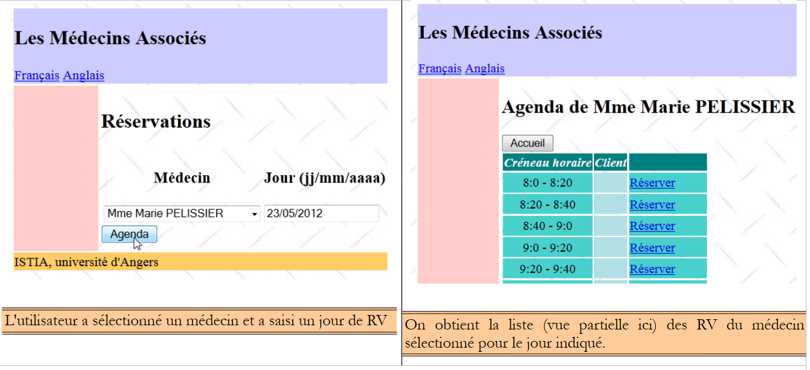 |
- Zeile 21: Wir rufen den ausgewählten Arzt aus dem Ärzteverzeichnis ab, das im Anwendungs-Bean gespeichert ist. Dazu verwenden wir seine ID, die an idMedecin gesendet wurde,
- Zeile 23: Wir bereiten den Titel der Seite [form2.xhtml] vor, die angezeigt werden soll. Diese Meldung wird aus der Meldungsdatei abgerufen, damit sie internationalisiert werden kann. Diese Technik wurde in Abschnitt 2.8.5.7, Seite 135, beschrieben.
- Zeile 25: Wir rufen die [Business]-Schicht auf, um den Terminplan des ausgewählten Arztes für den ausgewählten Tag zu berechnen,
- Zeile 27: [form2.xhtml] wird angezeigt,
- Zeile 28: Tritt eine Ausnahme auf, wird eine Fehlerliste erstellt (Zeilen 37–42) und die Seite [error.xhtml] angezeigt (Zeile 44).
3.6.6.2. Anzeige des Terminkalenders eines Arztes
Die Seite [form2.xhtml] entspricht der folgenden Ansicht:
 |
Der Code für die Seite [form2.xhtml] lautet wie folgt:
<?xml version='1.0' encoding='UTF-8' ?>
<!DOCTYPE html PUBLIC "-//W3C//DTD XHTML 1.0 Transitional//EN" "http://www.w3.org/TR/xhtml1/DTD/xhtml1-transitional.dtd">
<html xmlns="http://www.w3.org/1999/xhtml"
xmlns:h="http://java.sun.com/jsf/html"
xmlns:f="http://java.sun.com/jsf/core"
xmlns:ui="http://java.sun.com/jsf/facelets"
xmlns:c="http://java.sun.com/jsp/jstl/core">
<body>
<h2><h:outputText value="#{form.form2Titre}"/></h2>
<h:commandButton value="#{msg['form2.accueil']}" action="#{form.accueil}" />
<h:dataTable value="#{form.agendaMedecinJour.creneauxMedecinJour}" var="creneauMedecinJour" headerClass="reservationsHeaders" columnClasses="creneau,client,action">
<h:column>
<f:facet name="header">
<h:outputText value="#{msg['form2.creneauHoraire']}"/>
</f:facet>
<h:outputText value="#{creneauMedecinJour.creneau.hdebut}:#{creneauMedecinJour.creneau.mdebut} - #{creneauMedecinJour.creneau.hfin}:#{creneauMedecinJour.creneau.mfin}" />
</h:column>
<h:column>
<f:facet name="header">
<h:outputText value="#{msg['form2.client']}"/>
</f:facet>
<c:if test="#{creneauMedecinJour.rv==null}">
<h:outputText value=""/>
<c:otherwise>
<h:outputText value="#{creneauMedecinJour.rv.client.titre} #{creneauMedecinJour.rv.client.prenom} #{creneauMedecinJour.rv.client.nom}"/>
</c:otherwise>
</c:if>
</h:column>
<h:column>
<f:facet name="header"/>
<h:commandLink action="#{form.action()}" value="#{creneauMedecinJour.rv==null ? msg['form2.reserver'] : msg['form2.supprimer']}">
<f:setPropertyActionListener value="#{creneauMedecinJour.creneau.id}" target="#{form.idCreneau}"/>
</h:commandLink>
</h:column>
</h:dataTable>
</body>
</html>
Erinnern Sie sich daran, dass die Methode getAgenda zwei Felder im Modell initialisiert hat:
// modèle
private String form2Titre;
private AgendaMedecinJour agendaMedecinJour;
Diese beiden Felder füllen die Seite [form2.xhtml]:
- Zeile 10, der Seitentitel,
- Zeile 12: Der Terminplan des Arztes wird mithilfe eines dreispaltigen <h:dataTable>-Tags angezeigt,
- Zeilen 13–18: In der ersten Spalte werden die Zeitfenster angezeigt,
- Zeilen 19–30: In der zweiten Spalte wird der Name des Kunden angezeigt, der den Termin möglicherweise gebucht hat, oder nichts, falls dies nicht der Fall ist. Für diese Auswahl verwenden wir Tags aus der JSTL-Core-Bibliothek, auf die in Zeile 7 verwiesen wird,
- Zeilen 30–35: In der dritten Spalte wird der Link [Buchen] angezeigt, wenn der Termin verfügbar ist, und der Link [Löschen], wenn der Termin gebucht ist.
Die Links in der dritten Spalte sind mit der folgenden Vorlage verknüpft:
// modèle
private Long idCreneau;
// action sur RV
public void action() {
...
}
- Die Aktionsmethode wird aufgerufen, wenn der Benutzer auf den Link „Reservieren/Löschen“ klickt (Zeile 32). Beachten Sie, dass hier das Attribut „action“ verwendet wird. Die Methode, auf die dieses Attribut verweist, sollte die Signatur `String action()` haben, da die Methode dann einen Navigationsschlüssel zurückgeben muss. Hier lautet sie jedoch `void action()`. Dies führte nicht zu einem Fehler, und wir können davon ausgehen, dass in diesem Fall keine Navigation stattfindet. Dies war beabsichtigt. Die Verwendung von `actionListener` anstelle von `action` führte zu einer Fehlfunktion,
- Das Feld `idCreneau` in Zeile 2 ruft die ID des Zeitfensters ab, das mit dem angeklickten Link verknüpft ist (Zeile 33 der Seite).
3.6.6.3. Löschen eines Termins
Sehen wir uns den Code an, der das Löschen eines Termins abwickelt. Dies entspricht der folgenden Abfolge von Ansichten:
 |
Der für diesen Vorgang zuständige Code lautet wie folgt:
// bean Application
@Inject
private Application application;
// model
private Boolean form1Rendered = true;
private Boolean form2Rendered = false;
private Boolean form3Rendered = false;
private Boolean erreurRendered = false;
private AgendaMedecinJour agendaMedecinJour;
private Long idCreneau;
private CreneauMedecinJour creneauChoisi;
private List<Erreur> erreurs;
// action on RV
public void action() {
// search for the time slot in the calendar
int i = 0;
Boolean trouvé = false;
while (!trouvé && i < agendaMedecinJour.getCreneauxMedecinJour().length) {
if (agendaMedecinJour.getCreneauxMedecinJour()[i].getCreneau().getId() == idCreneau) {
trouvé = true;
} else {
i++;
}
}
// have we found?
if (!trouvé) {
// it's weird - form2 is redisplayed
setForms(false, true, false, false);
return;
}
// we found
creneauChoisi = agendaMedecinJour.getCreneauxMedecinJour()[i];
// according to desired action
if (creneauChoisi.getRv() == null) {
reserver();
} else {
supprimer();
}
}
// reservation
public void reserver() {
...
}
public void supprimer() {
try {
// deleting an appointment
application.getMetier().supprimerRv(creneauChoisi.getRv());
// updating the agenda
agendaMedecinJour = application.getMetier().getAgendaMedecinJour(medecin, jour);
// form2 is displayed
setForms(false, true, false, false);
} catch (Throwable th) {
// error view
prepareVueErreur(th);
}
}
- Zeile 16: Wenn die Aktionsmethode startet, ist die ID des ausgewählten Zeitfensters in idCreneau gespeichert (Zeile 11),
- Zeilen 18–26: Wir versuchen, den Zeitblock anhand seiner ID abzurufen (Zeile 21). Wir suchen ihn im aktuellen Kalender agendaMedecinJour ab Zeile 10. Normalerweise sollten wir ihn finden. Wenn nicht, tun wir nichts (Zeilen 28–32),
- Zeile 34: Wenn der Zeitblock gefunden wurde, rufen wir eine Referenz darauf ab und speichern sie in Zeile 12,
- Zeile 36: Prüfen, ob der ausgewählte Zeitblock einen Termin enthielt. Wenn ja, diesen löschen (Zeile 39); andernfalls einen reservieren (Zeile 37),
- Zeile 51: Der Termin im ausgewählten Zeitfenster wird gelöscht. Dies wird von der [Business]-Schicht übernommen,
- Zeile 53: Wir fordern den aktualisierten Terminplan des Arztes von der [Business]-Schicht an. Dort sehen wir natürlich einen Termin weniger. Da es sich jedoch um eine Mehrbenutzeranwendung handelt, sehen wir möglicherweise Änderungen, die von anderen Benutzern vorgenommen wurden,
- Zeile 55: Die Seite [form2.xhtml] wird erneut angezeigt,
- Zeile 58: Da die [Business]-Schicht aufgerufen wurde, können Ausnahmen auftreten. In diesem Fall speichern wir den Ausnahmestapel in der Fehlerliste in Zeile 13 und zeigen ihn mithilfe der Ansicht [error.xhtml] an.
3.6.6.4. Terminplanung
Die Terminplanung folgt dieser Reihenfolge:
 |
Das bei dieser Aktion verwendete Modell sieht wie folgt aus:
// model
private Date jour = new Date();
private Boolean form1Rendered = true;
private Boolean form2Rendered = false;
private Boolean form3Rendered = false;
private Boolean erreurRendered = false;
private String form3Titre;
private AgendaMedecinJour agendaMedecinJour;
private Medecin medecin;
private CreneauMedecinJour creneauChoisi;
private List<Erreur> erreurs;
// action on RV
public void action() {
...
// we found
creneauChoisi = agendaMedecinJour.getCreneauxMedecinJour()[i];
// according to desired action
if (creneauChoisi.getRv() == null) {
reserver();
} else {
supprimer();
}
}
// reservation
public void reserver() {
try {
// title form 3
form3Titre = Messages.getMessage(null, "form3.titre", new Object[]{medecin.getTitre(), medecin.getPrenom(), medecin.getNom(), new SimpleDateFormat("dd MMM yyyy").format(jour),
creneauChoisi.getCreneau().getHdebut(), creneauChoisi.getCreneau().getMdebut(), creneauChoisi.getCreneau().getHfin(), creneauChoisi.getCreneau().getMfin()}).getSummary();
// customer selected in combo
idClient=null;
// form 3 is displayed
setForms(false, false, true, false);
} catch (Throwable th) {
// error view
prepareVueErreur(th);
}
}
- Zeile 14: Wenn der ausgewählte Zeitblock keinen Termin enthält, handelt es sich um eine Reservierung,
- Zeile 30: Wir bereiten den Seitentitel [form3.xhtml] mit derselben Technik vor wie für den Seitentitel [form2.xhtml],
- Zeile 34: In diesem Formular gibt es ein Kombinationsfeld, dessen Wert durch idClient gefüllt wird. Wir setzen den Wert dieses Feldes auf null, damit niemand ausgewählt ist,
- Zeile 36: Wir zeigen die Seite [form3.xhtml] an,
- Zeile 39: oder die Fehlerseite, falls eine Ausnahme aufgetreten ist.
Die Seite [form3.xhtml] sieht wie folgt aus:
<?xml version='1.0' encoding='UTF-8' ?>
<!DOCTYPE html PUBLIC "-//W3C//DTD XHTML 1.0 Transitional//EN" "http://www.w3.org/TR/xhtml1/DTD/xhtml1-transitional.dtd">
<html xmlns="http://www.w3.org/1999/xhtml"
xmlns:h="http://java.sun.com/jsf/html"
xmlns:f="http://java.sun.com/jsf/core"
xmlns:ui="http://java.sun.com/jsf/facelets">
<body>
<h2><h:outputText value="#{form.form3Titre}"/></h2>
<h:panelGrid columns="2">
<h:outputText value="#{msg['form3.client']}"/>
<h:selectOneMenu value="#{form.idClient}">
<f:selectItems value="#{form.clients}" var="client" itemLabel="#{client.titre} #{client.prenom} #{client.nom}" itemValue="#{client.id}"/>
</h:selectOneMenu>
<h:panelGroup>
<h:commandButton value="#{msg['form3.valider']}" actionListener="#{form.validerRv}" />
<h:commandButton value="#{msg['form3.annuler']}" actionListener="#{form.annulerRv}"/>
</h:panelGroup>
</h:panelGrid>
</body>
</html>
Diese Seite basiert auf dem folgenden Modell:
// bean Application
@Inject
private Application application;
// model
private Long idClient;
// customer list
public List<Client> getClients() {
return application.getClients();
}
- Zeile 6: Die Client-ID füllt das Wert-Attribut des Client-Kombinationsfelds in Zeile 12 der Seite. Sie legt das ausgewählte Element des Kombinationsfelds fest,
- Zeilen 9–11: Die Methode getClients füllt das Dropdown-Menü (Zeile 13). Die Beschriftung (itemLabel) für jede Option lautet [Titel Vorname Nachname] für den Kunden, und der zugehörige Wert (itemValue) ist die ID des Kunden. Es ist daher dieser Wert, der übermittelt wird.
3.6.6.5. Bestätigung eines Termins
Die Bestätigung eines Termins erfolgt in folgender Reihenfolge:
 |
und entspricht dem Klicken auf die Schaltfläche [Bestätigen]:
<h:commandButton value="#{msg['form3.valider']}" actionListener="#{form.validerRv}" />
Die Methode [Form].validerRv verarbeitet daher dieses Ereignis. Der Code lautet wie folgt:
// bean Application
@Inject
private Application application;
// model
private Date jour = new Date();
private Boolean form1Rendered = true;
private Boolean form2Rendered = false;
private Boolean form3Rendered = false;
private Boolean erreurRendered = false;
private Long idCreneau;
private Long idClient;
private List<Erreur> erreurs;
// rv validation
public void validerRv() {
try {
// retrieve an instance of the selected time slot
Creneau creneau = application.getMetier().getCreneauById(idCreneau);
// we add the Rv
application.getMetier().ajouterRv(jour, creneau, application.gethClients().get(idClient));
// updating the agenda
agendaMedecinJour = application.getMetier().getAgendaMedecinJour(medecin, jour);
// form2 is displayed
setForms(false, true, false, false);
} catch (Throwable th) {
// error view
prepareVueErreur(th);
}
}
- Zeile 12: Bevor die Methode `validerRv` ausgeführt wird, hat das Feld `idClient` die ID des vom Benutzer ausgewählten Kunden erhalten,
- Zeile 19: Unter Verwendung der in einem vorherigen Schritt gespeicherten Zeitfenster-ID (die Bean ist sitzungsgebunden) fordern wir von der [Business]-Schicht eine Referenz auf das Zeitfenster selbst an,
- Zeile 21: Die [Business]-Schicht wird aufgefordert, einen Termin für den ausgewählten Tag (day), den ausgewählten Zeitblock (slot) und den ausgewählten Kunden (idClient) hinzuzufügen,
- Zeile 23: Wir bitten die [Business]-Schicht, den Kalender des Arztes zu aktualisieren. Wir sehen den hinzugefügten Termin zusammen mit allen Änderungen, die andere Benutzer der Anwendung möglicherweise vorgenommen haben,
- Zeile 25: Der Kalender [form2.xhtml] wird erneut angezeigt,
- Zeile 28: Anzeige der Fehlerseite, falls ein Fehler auftritt.
3.6.6.6. Einen Termin stornieren
Dies entspricht der folgenden Abfolge:
 |
Die Schaltfläche [Abbrechen] auf der Seite [form3.xhtml] sieht wie folgt aus:
<h:commandButton value="#{msg['form3.annuler']}" actionListener="#{form.annulerRv}"/>
Daher wird die Methode [Form].cancelAppointment aufgerufen:
// annulation prise de Rdv
public void annulerRv() {
// on affiche form2
setForms(false, true, false, false);
}
3.6.6.7. Zurück zur Startseite
Es gibt noch eine weitere Aktion, die wir uns in der folgenden Abfolge ansehen müssen:
 |
Der Code für die Schaltfläche [Home] auf der Seite [form2.xhtml] lautet wie folgt:
<h:commandButton value="#{msg['form2.accueil']}" action="#{form.accueil}" />
Die Methode [Form].accueil lautet wie folgt:
public void accueil() {
// on affiche la page d'accueil
setForms(true, false, false, false);
}
3.7. Fazit
Wir haben die folgende Anwendung erstellt:
 |
Wir haben uns eher auf die Funktionalität der Anwendung als auf ihre Benutzeroberfläche konzentriert. Letztere wird mithilfe der PrimeFaces-Komponentenbibliothek verbessert werden. Wir haben eine einfache Anwendung erstellt, die dennoch eine mehrschichtige Java-EE-Architektur unter Verwendung von EJBs darstellt. Die Anwendung kann auf verschiedene Weise verbessert werden:
- Eine Authentifizierung ist erforderlich. Nicht jeder ist berechtigt, Termine hinzuzufügen oder zu löschen,
- wir sollten im Kalender vor- und zurückscrollen können, wenn wir nach einem Tag mit freien Terminen suchen,
- es sollte möglich sein, eine Liste der Tage anzufordern, an denen ein Arzt freie Termine hat. Wenn es sich bei dem Arzt um einen Augenarzt handelt, werden Termine in der Regel sechs Monate im Voraus gebucht,
- ...
3.8. Testen mit Eclipse
3.8.1. Die [DAO]-Schicht
 |
- Importieren Sie in [1] das EJB-Projekt für die [DAO]-Schicht und dessen Client,
- in [2] wählen wir das EJB-Projekt der [DAO]-Schicht aus und führen es aus [3],
- in [4] führen wir es auf einem Server aus,
 |
- In [5] wird nur der Glassfish-Server angeboten, da er der einzige mit einem EJB-Container ist,
- In [6] wurde das EJB-Modul bereitgestellt,
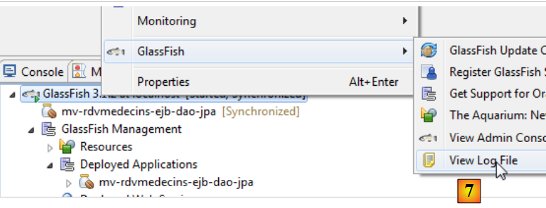 |
- In [7] werden die Protokolle angezeigt:
Das sind die, die wir mit NetBeans hatten.
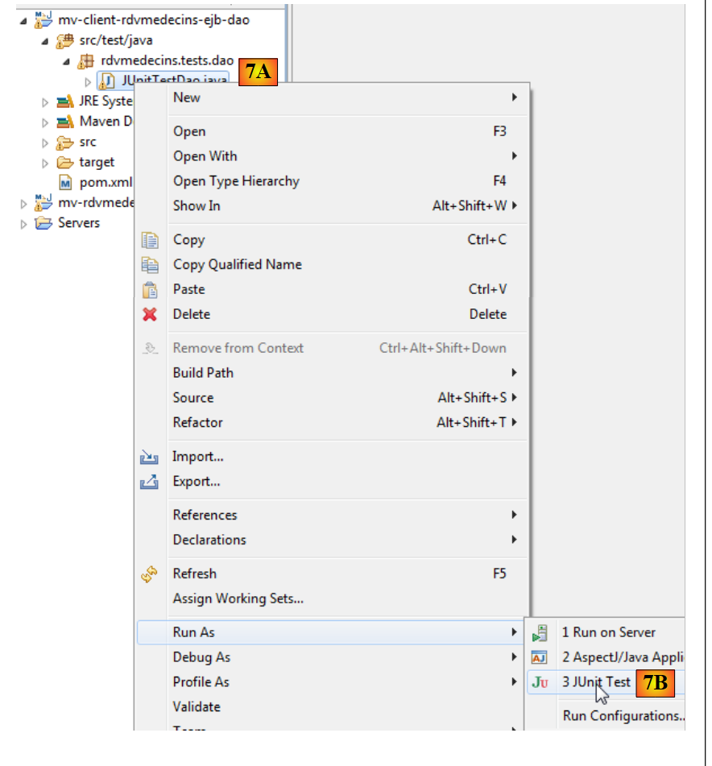 |
- In [7A] [7B] führen wir den JUnit-Test des Clients aus,
 |
- in [8] wird der Test bestanden,
- in [9] werden die Konsolenprotokolle angezeigt.
 |
In [10] wird die EJB-Anwendung entladen.
3.8.2. Die [Business-]Schicht
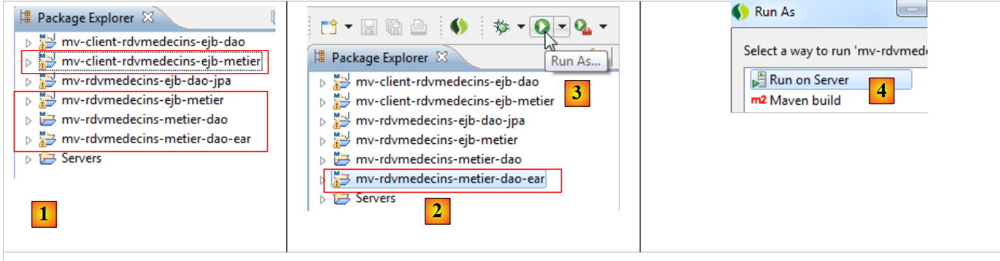 |
- Importieren Sie in [1] die vier Maven-Projekte aus der [Business]-Schicht,
- Wählen Sie in [2] das Unternehmensprojekt aus und führen Sie es aus Führen Sie in [3] auf einem GlassFish-Server [4] [5]
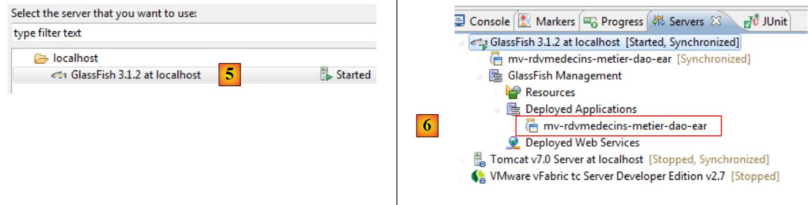 |
- in [6] wurde das Unternehmensprojekt auf GlassFish bereitgestellt,
 |
- In [7] betrachten wir die GlassFish-Protokolle,
In Zeile 3 notieren wir uns den portablen Namen des EJB [Metier] und fügen ihn in die Konsolen-Client-Anwendung für dieses EJB ein:
public class ClientRdvMedecinsMetier {
// the remote interface name of the EJB [Metier]
private static String IDaoRemoteName = "java:global/mv-rdvmedecins-metier-dao-ear/mv-rdvmedecins-ejb-metier-1.0-SNAPSHOT/Metier!rdvmedecins.metier.service.IMetierRemote";
// today's date
private static Date jour = new Date();
 |
- In [8] führen wir den Konsolen-Client aus
- in [9] dessen Protokolle.
 |
- in [10] wird die Unternehmensanwendung entladen;
3.8.3. Die [Web]-Schicht
 |
- In [1] importieren wir die drei Maven-Projekte aus der [Web]-Schicht. Das Projekt mit der Erweiterung .ear ist das Enterprise-Projekt, das auf GlassFish bereitgestellt werden muss;
- in [2] führen wir es aus,
 |
- auf dem GlassFish-Server [3],
- in [4] wurde die Unternehmensanwendung erfolgreich bereitgestellt,
 |
- in [5] geben wir die URL der Anwendung in den internen Browser von Eclipse ein.